5. Model Physics
As stated in chapter [chap:coupling], the total parameterization package
in CAM5.0 consists of a sequence of components, indicated by
where  denotes (Moist) precipitation processes,
denotes (Moist) precipitation processes,
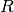
denotes clouds and Radiation,
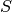
denotes the Surface model, and

denotes Turbulent mixing. Each of these in turn is subdivided
into various components:
includes an optional dry adiabatic
adjustment normally applied only in the stratosphere, moist penetrative
convection, shallow convection, and large-scale stable condensation;
first calculates the cloud parameterization followed by the
radiation parameterization; provides the surface fluxes
obtained from land, ocean and sea ice models, or calculates them based
on specified surface conditions such as sea surface temperatures and sea
ice distribution. These surface fluxes provide lower flux boundary
conditions for the turbulent mixing
which is comprised of the
planetary boundary layer parameterization, vertical diffusion, and
gravity wave drag.
The updating described in the preceding paragraph of all variable except
temperature is straightforward. Temperature, however, is a little more
complicated and follows the general procedure described by Boville and
[BB03] involving dry static energy. The state variable
updated after each time-split parameterization component is the dry
static energy
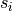
. Let be the index in a sequence of
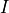
time-split processes. The dry static energy at the end of the
th process is . The dry static energy is updated
using the heating rate
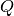
calculated by the th
process:
In processes not formulated in terms of dry static energy but rather in
terms of a temperature tendency, the heating rate is given by
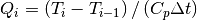
.
The temperature,  , and geopotential,
, and geopotential,
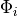
, are
calculated from by inverting the equation for

with the hydrostatic equation
substituted for  . The temperature tendencies for each
process are also accumulated over the processes. For processes
formulated in terms of dry static energy the temperature tendencies are
calculated from the dry static energy tendency. Let
. The temperature tendencies for each
process are also accumulated over the processes. For processes
formulated in terms of dry static energy the temperature tendencies are
calculated from the dry static energy tendency. Let
 denote the total accumulation at the end
of the th process. Then
denote the total accumulation at the end
of the th process. Then
which assumes is unchanged. Note that the inversion of
for and changes and
. This is not included in the
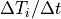
above for processes formulated to give
dry static energy tendencies.. In processes not formulated in terms of
dry static energy but rather in terms of a temperature tendency, that
tendency is simply accumulated.
After the last parameterization is completed, the dry static energy of
the last update is saved. This final column energy is saved and used at
the beginning of the next physics calculation following the Finite
Volume dynamical update to calculate the global energy fixer associated
with the dynamical core. The implication is that the energy
inconsistency introduced by sending the described above to the
FV rather than the returned by inverting the dry static energy
is included in the fixer attributed to the dynamics. The accumulated
physics temperature tendency is also available after the last
parameterization is completed,  . An
updated temperature is calculated from it by adding it to the
temperature at the beginning of the physics.
. An
updated temperature is calculated from it by adding it to the
temperature at the beginning of the physics.
This temperature is converted to virtual potential temperature and
passed to the Finite Volume dynamical core. The temperature tendency
itself is passed to the spectral transform Eulerian and semi-Lagrangian
dynamical cores. The inconsistency in the use of temperature and dry
static energy apparent in the description above should be eliminated in
future versions of the model.
5.1. Conversion to and from dry and wet mixing ratios for trace constituents in the model
There are trade offs in the various options for the representation of
trace constituents  in any general circulation model:
in any general circulation model:
- When the air mass in a model layer is defined to include the water
vapor, it is frequently convenient to represent the quantity of trace
constituent as a “moist” mixing ratio
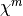
, that is, the
mass of tracer per mass of moist air in the layer. The advantage of
the representation is that one need only multiply the moist mixing
ratio by the moist air mass to determine the tracer air mass. It has
the disadvantage of implicitly requiring a change in
whenever the water vapor 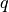
changes within the layer, even if
the mass of the trace constituent does not.
- One can also utilize a “dry” mixing ratio
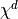
to define
the amount of constituent in a volume of air. This variable does not
have the implicit dependence on water vapor, but does require that
the mass of water vapor be factored out of the air mass itself in
order to calculate the mass of tracer in a cell.
NCAR atmospheric models have historically used a combination of dry and
moist mixing ratios. Physical parameterizations (including convective
transport) have utilized moist mixing ratios. The resolved scale
transport performed in the Eulerian (spectral), and semi-Lagrangian
dynamics use dry mixing ratios, specifically to prevent oscillations
associated with variations in water vapor requiring changes in tracer
mixing ratios. The finite volume dynamics module utilizes moist mixing
ratios, with an attempt to maintain internal consistency between
transport of water vapor and other constituents.
There is no “right” way to resolve the requirements associated with the
simultaneous treatment of water vapor, air mass in a layer and tracer
mixing ratios. But the historical treatment significantly complicates
the interpretation of model simulations, and in the latest version of
CAM we have also provided an “alternate” representation. That is, we
allow the user to specify whether any given trace constituent is
interpreted as a “dry” or “wet” mixing ratio through the specification
of an “attribute” to the constituent in the physics state structure. The
details of the specification are described in the users manual, but we
do identify the interaction between state quantities here.
At the end of the dynamics update to the model state, the surface
pressure, specific humidity, and tracer mixing ratios are returned to
the model. The physics update then is allowed to update specific
humidity and tracer mixing ratios through a sequence of operator
splitting updates but the surface pressure is not allowed to evolve.
Because there is an explicit relationship between the surface pressure
and the air mass within each layer we assume that water mass can change
within the layer by physical parameterizations but dry air mass
cannot. We have chosen to define the dry air mass in each layer at the
beginning of the physics update as
for column , level
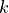
. Note that the specific humidity
used is the value defined at the beginning of the physics update. We
define the transformation between dry and wet mixing ratios to be
We note that the various physical parameterizations that operate on
tracers on the model (convection, turbulent transport, scavenging,
chemistry) will require a specification of the air mass within each cell
as well as the value of the mixing ratio in the cell. We have modified
the model so that it will use the correct value of
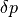
depending on the attribute of the tracer, that is, we use couplets of
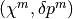
or

in order to
assure that the process conserves mass appropriately.
We note further that there are a number of parameterizations
(convection, vertical diffusion) that transport species using a
continuity equation in a flux form that can be written generically as
where
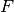
indicates a flux of
. For example, in
convective transports
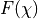
might correspond to

where
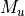
is an updraft mass flux. In
principle one should adjust to reflect the fact that it may
be moving a mass of dry air or a mass of moist air. We assume these
differences are small, and well below the errors required to produce
equation
(1) in the first place. The same is true for the
diffusion coefficients involved in turbulent transport. All processes
using equations of such a form still satisfy a conservation relationship
provided the appropriate is used in the summation.
5.2. Deep Convection
The process of deep convection is treated with a parameterization
scheme developed by [ZM95] and modified with the addition of
convective momentum transports by [RR08] and a modified
dilute plume calculation following [RB86][RB92]. The
scheme is based on a plume ensemble approach where it is assumed that
an ensemble of convective scale updrafts (and the associated saturated
downdrafts) may exist whenever the atmosphere is conditionally
unstable in the lower troposphere. The updraft ensemble is comprised
of plumes sufficiently buoyant so as to penetrate the unstable layer,
where all plumes have the same upward mass flux at the bottom of the
convective layer. Moist convection occurs only when there is
convective available potential energy (CAPE) for which parcel ascent
from the sub-cloud layer acts to destroy the CAPE at an exponential
rate using a specified adjustment time scale. For the convenience of
the reader we will review some aspects of the formulation, but refer
the interested reader to [ZM95] for additional detail,
including behavioral characteristics of the parameterization scheme.
Evaporation of convective precipitation is computed following the
procedure described in section conv_evap.
The large-scale budget equations distinguish between a cloud and
sub-cloud layer where temperature and moisture response to convection in
the cloud layer is written in terms of bulk convective fluxes as
for  , where
, where
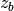
is the height of the cloud base.
For

, where
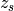
is the surface height, the
sub-cloud layer response is written as
where the net vertical mass flux in the convective region,  ,
is comprised of upward, , and downward,
,
is comprised of upward, , and downward,
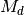
,
components,
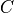
and

are the large-scale condensation and
evaporation rates, ,

,
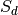
, ,
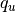
,
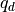
, are the corresponding values of the dry static
energy and specific humidity, and
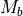
is the cloud base mass
flux.
5.2.1. Updraft Ensemble
The updraft ensemble is represented as a collection of entraining
plumes, each with a characteristic fractional entrainment rate
 . The moist static energy in each plume
. The moist static energy in each plume
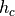
is
given by
Mass carried upward by the plumes is detrained into the environment in a
thin layer at the top of the plume,  , where the detrained air
is assumed to have the same thermal properties as in the environment
(
, where the detrained air
is assumed to have the same thermal properties as in the environment
(
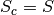
). Plumes with smaller
penetrate to larger
. The entrainment rate

for the plume which
detrains at height
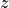
is then determined by solving
(6) ,
with lower boundary condition
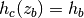
:
Since the plume is saturated, the detraining air must have
 , so that
, so that
Then, is determined by solving (7) iteratively
at each .
The top of the shallowest of the convective plumes,
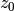
is
assumed to be no lower than the mid-tropospheric minimum in saturated
moist static energy,
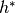
, ensuring that the cloud top
detrainment is confined to the conditionally stable portion of the
atmospheric column. All condensation is assumed to occur within the
updraft plumes, so that
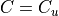
. Each plume is assumed to have
the same value for the cloud base mass flux , which is
specified below. The vertical distribution of the cloud updraft mass
flux is given by
where  is the maximum detrainment rate, which occurs
for the plume detraining at height , and is
the entrainment rate for the updraft that detrains at height .
Detrainment is confined to regions where decreases
with height, so that the total detrainment
is the maximum detrainment rate, which occurs
for the plume detraining at height , and is
the entrainment rate for the updraft that detrains at height .
Detrainment is confined to regions where decreases
with height, so that the total detrainment
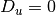
for
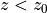
. Above ,
The total entrainment rate is then just given by the change in mass
flux and the total detrainment,
The updraft budget equations for dry static energy, water vapor mixing
ratio, moist static energy, and cloud liquid water, , are:
where (13) is formed from (11) and (12) and detraining
air has been assumed to be saturated ( and  ).
It is also assumed that the liquid content of the detrained air is the
same as the ensemble mean cloud water (). The
conversion from cloud water to rain water is given by
).
It is also assumed that the liquid content of the detrained air is the
same as the ensemble mean cloud water (). The
conversion from cloud water to rain water is given by
following Lord, Chao, and Arakawa (1982), with
 .
.
Since ,  and are given by
(8) - (10), and and are environmental
profiles, (13) can be solved for , given a lower
boundary condition. The lower boundary condition is obtained by adding a
K temperature perturbation to the dry (and moist) static
energy at cloud base, or at . Below the lifting condensation level
(LCL), and are given by (11) and (12) .
Above the LCL, is reduced by condensation and is
increased by the latent heat of vaporization. In order to obtain to
obtain a saturated updraft at the temperature implied by , we
define
and are given by
(8) - (10), and and are environmental
profiles, (13) can be solved for , given a lower
boundary condition. The lower boundary condition is obtained by adding a
K temperature perturbation to the dry (and moist) static
energy at cloud base, or at . Below the lifting condensation level
(LCL), and are given by (11) and (12) .
Above the LCL, is reduced by condensation and is
increased by the latent heat of vaporization. In order to obtain to
obtain a saturated updraft at the temperature implied by , we
define  as the temperature perturbation in the updraft,
then:
as the temperature perturbation in the updraft,
then:
(16)
Substituting (17) and (18) into (16) ,
The required updraft quantities are then
With given by (20) , (11) can be solved for
, then (14) and (15) can be solved for
and .
The expressions above require both the saturation specific humidity to
be
where is the saturation vapor pressure, and its dependence
on temperature (in order to maintain saturation as the temperature
varies) to be
The deep convection scheme does not use the same approximation for the
saturation vapor pressure as is used in the rest of the
model. Instead,
(22)![e^* = c_1 \exp\left[\frac{c_2(T - T_f)}{(T-T_f+c_3)} \right]
~,](../_images/math/f19b9d5122209c50983c3881bc407a51569c4fd7.png)
where ,  ,
,  K and
K is the freezing point. For this approximation,
K and
K is the freezing point. For this approximation,
We note that the expression for in the code gives
The expressions for in (24) and
(25) are not identical. Also,  and
.
and
.
5.2.2. Downdraft Ensemble
Downdrafts are assumed to exist whenever there is precipitation
production in the updraft ensemble where the downdrafts start at or
below the bottom of the updraft detrainment layer. Detrainment from the
downdrafts is confined to the sub-cloud layer, where all downdrafts have
the same mass flux at the top of the downdraft region. Accordingly, the
ensemble downdraft mass flux takes a similar form to (8) but
includes a “proportionality factor” to ensure that the downdraft
strength is physically consistent with precipitation availability. This
coefficient takes the form
where  is the total precipitation in the convective layer and
is the rain water evaporation required to maintain the
downdraft in a saturated state. This formalism ensures that the
downdraft mass flux vanishes in the absence of precipitation, and that
evaporation cannot exceed some fraction,
is the total precipitation in the convective layer and
is the rain water evaporation required to maintain the
downdraft in a saturated state. This formalism ensures that the
downdraft mass flux vanishes in the absence of precipitation, and that
evaporation cannot exceed some fraction,  , of the
precipitation, where = 0.2.
, of the
precipitation, where = 0.2.
5.2.3. Closure
The parameterization is closed, i.e., the cloud base mass fluxes are
determined, as a function of the rate at which the cumulus consume
convective available potential energy (CAPE). Since the large-scale
temperature and moisture changes in both the cloud and sub-cloud layer
are linearly proportional to the cloud base updraft mass flux (see eq.
(2) – (5)), the CAPE change due to convective activity can be
written as
where is the CAPE consumption rate per unit cloud base mass
flux. The closure condition is that the CAPE is consumed at an
exponential rate by cumulus convection with characteristic adjustment
time scale :
(28)
5.2.4. Numerical Approximations
The quantities , , ,
 , are defined on layer interfaces, while
, , are defined on layer midpoints.
, , , are required on both
midpoints and interfaces and the interface values
, are defined on layer interfaces, while
, , are defined on layer midpoints.
, , , are required on both
midpoints and interfaces and the interface values  are determined from the midpoint values
are determined from the midpoint values  as
as
(29)
All of the differencing within the deep convection is in height
coordinates. The differences are naturally taken as
where and represent values on the
upper and lower interfaces, respectively for layer . The
convention elsewhere in this note (and elsewhere in the code) is
 . Therefore, we avoid using the compact
notation, except for height, and define
. Therefore, we avoid using the compact
notation, except for height, and define
so that  corresponds to the variable dz(k) in the deep
convection code.
corresponds to the variable dz(k) in the deep
convection code.
Although differences are in height coordinates, the equations are cast
in flux form and the tendencies are computed in units
. The expected units are recovered at the end by multiplying by
.
The environmental profiles at midpoints are
The environmental profiles at interfaces of , ,
 , and are determined using (29)
if is large enough.
However, there are inconsistencies in what happens if
is not large enough. For and the condition is
, and are determined using (29)
if is large enough.
However, there are inconsistencies in what happens if
is not large enough. For and the condition is
For and the condition is
Interface values of are not needed and interface values of
are given by
The unitless updraft mass flux (scaled by the inverse of the cloud base
mass flux) is given by differencing (8) as
with the boundary condition that . The entrainment
and detrainment are calculated using
Note that and  differ only by the
value of .
differ only by the
value of .
The updraft moist static energy is determined by differencing (13)
(31)![h_u^{k-} = \frac{1}{M_u^{k-}}\left[M_u^{k+} h_u^{k+} + d^kz\left( E_u^k h^k - D_u^k h^{*k} \right)\right] ~,](../_images/math/5287d50415312ab7410886328a83c55bfbf07919.png)
with  , where is the layer of
maximum .
, where is the layer of
maximum .
Once is determined, the lifting condensation level is found
by differencing (11) and (12) similarly to (13) :
The detrainment of is given by not by
 , since detrainment occurs at the environmental value
of . The detrainment of is given by
, even though the updraft is not yet saturated. The
LCL will usually occur below , the level at which detrainment
begins, but this is not guaranteed.
, since detrainment occurs at the environmental value
of . The detrainment of is given by
, even though the updraft is not yet saturated. The
LCL will usually occur below , the level at which detrainment
begins, but this is not guaranteed.
The lower boundary conditions, and
, are determined from the first midpoint values in the plume,
rather than from the interface values of and . The
solution of (32) and (33) continues upward until the updraft is
saturated according to the condition
The condensation (in units of m ) is determined by a
centered differencing of (11) :
) is determined by a
centered differencing of (11) :
The rain production (in units of m) and condensed liquid
are then determined by differencing (14) as
and (15) as
Then
5.2.5. Deep Convective Momentum Transports
Sub-grid scale Convective Momentum Transports (CMT) have ben added to
the existing deep convection parameterization following Richter and
Rasch (2008) and the methodology of Gregory, Kershaw, and Inness (1997).
The sub-grid scale transport of momentum can be cast in the same manner
as (3) . Expressing the grid mean horizontal velocity vector,
, tendency due to deep convection transport
following Kershaw and Gregory (1997) gives
and neglecting the contribution from the environment the updraft and
downdraft budget equation can similarly be written as
where  and the
updraft and downdraft pressure gradient sink terms parameterized from
Gregory, Kershaw, and Inness (1997) as
and the
updraft and downdraft pressure gradient sink terms parameterized from
Gregory, Kershaw, and Inness (1997) as
(36)
and are tunable parameters. In the CAM5.0
implementation we use . The value of
and control the strength of convective momentum transport.
As these coefiicients increase so do the pressure gradient terms, and
convective momentum transport decreases.
5.2.6. Deep Convective Tracer Transport
The CAM5.0 provides the ability to transport constituents via convection. The
method used for constituent transport by deep convection is a
modification of the formulation described in Zhang and McFarlane (1995).
We assume the updrafts and downdrafts are described by a steady state
mass continuity equation for a “bulk” updraft or downdraft
The subscript is used to denote the updraft ( ) or
downdraft (
) or
downdraft ( ) quantity. here is the mass flux in
units of Pa/s defined at the layer interfaces, is the mixing
ratio of the updraft or downdraft.
) quantity. here is the mass flux in
units of Pa/s defined at the layer interfaces, is the mixing
ratio of the updraft or downdraft.  is the mixing ratio of
the quantity in the environment (that part of the grid volume not
occupied by the up and downdrafts).
is the mixing ratio of
the quantity in the environment (that part of the grid volume not
occupied by the up and downdrafts).  and are the
entrainment and detrainment rates (units of s) for the
up- and down-drafts. Updrafts are allowed to entrain or detrain in any
layer. Downdrafts are assumed to entrain only, and all of the mass is
assumed to be deposited into the surface layer.
and are the
entrainment and detrainment rates (units of s) for the
up- and down-drafts. Updrafts are allowed to entrain or detrain in any
layer. Downdrafts are assumed to entrain only, and all of the mass is
assumed to be deposited into the surface layer.
Equation (38) is first solved for up and downdraft mixing ratios
and , assuming the environmental mixing ratio
is the same as the gridbox averaged mixing ratio
.
Given the up- and down-draft mixing ratios, the mass continuity equation
used to solve for the gridbox averaged mixing ratio is
These equations are solved for in subroutine CONVTRAN. There are a few
numerical details employed in CONVTRAN that are worth mentioning here as
well.
- mixing quantities needed at interfaces are calculated using the
geometric mean of the layer mean values.
- simple first order upstream biased finite differences are used to
solve (38) and (39).
- fluxes calculated at the interfaces are constrained so that the
resulting mixing ratios are positive definite. This means that this
parameterization is not suitable for moving mixing ratios of
quantities meant to represent perturbations of a trace constituent
about a mean value (in which case the quantity can meaningfully take
on positive and negative mixing ratios). The algorithm can be
modified in a straightforward fashion to remove this constraint, and
provide meaningful transport of perturbation quantities if necessary.
the reader is warned however that there are other places in the
model code where similar modifications are required because the model
assumes that all mixing ratios should be positive definite
quantities.
5.3. Evaporation of convective precipitation
The CAM5.0 employs a [Sun88] style evaporation of the convective
precipitation as it makes its way to the surface. This scheme relates
the rate at which raindrops evaporate to the local large-scale
subsaturation, and the rate at which convective rainwater is made
available to the subsaturated model layer
where is the relative humidity at level ,
denotes the total rainwater flux at level
(which can be different from the locally diagnosed rainwater
flux from the convective parameterization, as will be shown below), the
coefficient takes the value 0.2  10 (kg m
s)s, and the variable
has units of s. The evaporation rate
is used to determine a local change in
10 (kg m
s)s, and the variable
has units of s. The evaporation rate
is used to determine a local change in  and
, associated with an evaporative reduction of
. Conceptually, the evaporation process is invoked
after a vertical profile of
and
, associated with an evaporative reduction of
. Conceptually, the evaporation process is invoked
after a vertical profile of  has been evaluated. An
evaporation rate is then computed for the uppermost level of the model
for which using (40) , where in this case
. This rate is used to evaluate
an evaporative reduction in which is then accumulated
with the previously diagnosed rainwater flux in the layer below,
has been evaluated. An
evaporation rate is then computed for the uppermost level of the model
for which using (40) , where in this case
. This rate is used to evaluate
an evaporative reduction in which is then accumulated
with the previously diagnosed rainwater flux in the layer below,
A local increase in the specific humidity and a local
reduction of are also calculated in accordance with the net
evaporation
and
The procedure, (40) -(43) , is then successively repeated for
each model level in a downward direction where the final convective
precipitation rate is that portion of the condensed rainwater in the
column to survive the evaporation process
(44)
In global annually averaged terms, this evaporation procedure produces
a very small reduction in the convective precipitation rate where the
evaporated condensate acts to moisten the middle and lower troposphere.
5.4. Prognostic Condensate and Precipitation Parameterization
5.5. Cloud Microphysics
The base parameterization of stratiform cloud microphysics is described
by Morrison and Gettelman (2008). Details of the CAM implementation are
described by Gettelman, Morrison, and Ghan (2008). Modifications to
handle ice nucleation and ice supersaturation are described by Gettelman
and others (2010).
The scheme seeks the following:
- A more flexible, self-consistent, physically-based treatment of cloud
physics.
- A reasonable level of simplicity and computational efficiency.
- Treatment of both number concentration and mixing ratio of cloud
particles to address indirect aerosol effects and cloud-aerosol
interaction.
- Representation of precipitation number concentration, mass, and phase
to better treat wet deposition and scavenging of aerosol and chemical
species.
- The achievement of equivalent or better results relative to the CAM3
microphysics parameterization when compared to observations.
The novel aspects of the scheme are an explicit representation of
sub-grid cloud water distribution for calculation of the various
microphysical process rates, and the diagnostic two-moment treatment of
rain and snow.
5.5.1. Overview of the microphysics scheme
The two-moment scheme is based loosely on the approach of Morrison,
Curry, and Khvorostyanov (2005). This scheme predicts the number
concentrations (Nc, Ni) and mixing ratios (qc, qi) of cloud droplets
(subscript c) and cloud ice (subscript i). Hereafter, unless stated
otherwise, the cloud variables Nc, Ni, qc, and qi represent
grid-averaged values; prime variables represent mean in-cloud quantities
(e.g., such that Nc = Fcld NcÕ, where Fcld is cloud fraction); and
double prime variables represent local in-cloud quantities. The
treatment of sub-grid cloud variability is detailed in section 2.1.
The cloud droplet and ice size distributions  are
represented by gamma functions:
are
represented by gamma functions:
where  is diameter, is the ÔinterceptÕ parameter,
is the slope parameter, and
is the spectra shape parameter; is the relative radius
dispersion of the size distribution. The parameter for
droplets is specified following Martin, Johnson, and Spice (1994). Their
observations of maritime versus continental warm stratocumulus have been
approximated by the following relationship:
is diameter, is the ÔinterceptÕ parameter,
is the slope parameter, and
is the spectra shape parameter; is the relative radius
dispersion of the size distribution. The parameter for
droplets is specified following Martin, Johnson, and Spice (1994). Their
observations of maritime versus continental warm stratocumulus have been
approximated by the following relationship:
where has units of cm. The
upper limit for is 0.577, corresponding with
a of 535 cm. Note that this
expression is uncertain, especially when applied to cloud types other
than those observed by Martin, Johnson, and Spice (1994). In the current
version of the scheme, = 0 for cloud ice.
The spectral parameters and are derived from
the predicted and and
specified :
where is the Euler gamma function. Note that (47) and
(48) assume spherical cloud particles with bulk density
= 1000 kg m for droplets and = 500 kg
m for cloud ice following Reisner, Rasmussen, and
Bruintjes (1998).
The effective size for cloud ice needed by the radiative transfer scheme
is obtained directly by dividing the third and second moments of the
size distribution given by (45) and accounting for differenceds in
cloud ice density and that of pure ice. After rearranging terms, this
yields
where kg m-2 is the bulk density of pure ice. Note
that optical properties for cloud droplets are calculated using a lookup
table from the and parameters. The droplet
effective radius, which is used for output purposes only, is given by
The time evolution of q and N is determined by grid-scale advection,
convective detrainment, turbulent diffusion, and several microphysical
processes:
(51)![\frac{\partial N}{\partial t} + \frac{1}{\rho} \nabla \cdot [\rho \mathbf{u} N] = \left(\frac{\partial N}{\partial t}\right)_{nuc} + \left(\frac{\partial N}{\partial t}\right)_{evap} + \left(\frac{\partial N}{\partial t}\right)_{auto} + \left(\frac{\partial N}{\partial t}\right)_{acer} + \left(\frac{\partial N}{\partial t}\right)_{accs} + \left(\frac{\partial N}{\partial t}\right)_{het} +\left(\frac{\partial N}{\partial t}\right)_{hom} + \left(\frac{\partial N}{\partial t}\right)_{mlt} + \left(\frac{\partial N}{\partial t}\right)_{mult} + \left(\frac{\partial N}{\partial t}\right)_{sed} + \left(\frac{\partial N}{\partial t}\right)_{det} +D(N)](../_images/math/ca34eff1842ce7620c209d9ff9a3ea567ba9c696.png)
(52)![\frac{\partial q}{\partial t} + \frac{1}{\rho} \nabla \cdot [\rho \mathbf{u} q] = \left(\frac{\partial q}{\partial t}\right)_{cond} + \left(\frac{\partial q}{\partial t}\right)_{evap} + \left(\frac{\partial q}{\partial t}\right)_{auto} + \left(\frac{\partial q}{\partial t}\right)_{acer} + \left(\frac{\partial q}{\partial t}\right)_{accs} + \left(\frac{\partial q}{\partial t}\right)_{het} +\left(\frac{\partial q}{\partial t}\right)_{hom} + \left(\frac{\partial q}{\partial t}\right)_{mlt} + \left(\frac{\partial q}{\partial t}\right)_{mult} + \left(\frac{\partial q}{\partial t}\right)_{sed} + \left(\frac{\partial q}{\partial t}\right)_{det} +D(N)](../_images/math/877d9361990275601df17bca86ed75b9eb945d7b.png)
where t is time, is the 3D wind vector,
is the air density, and D is the turbulent diffusion operator. The
symbolic terms on the right hand side of (51) and (52) represent
the grid-average microphysical source/sink terms for N and q. Note that
the source/sink terms for q and N are considered separately for cloud
water and ice (giving a total of four rate equations), but are
generalized here using (51) and (52) for conciseness. These
terms include activation of cloud condensation nuclei or
deposition/condensation-freezing nucleation on ice nuclei to form
droplets or cloud ice (subscript nuc; N only); ice multiplication via
rime-splintering on snow (subscript mult); condensation/deposition
(subscript cond; q only), evaporation/sublimation (subscript evap),
autoconversion of cloud droplets and ice to form rain and snow
(subscript auto), accretion of cloud droplets and ice by rain (subscript
accr), accretion of cloud droplets and ice by snow (subscript accs),
heterogeneous freezing of droplets to form ice (subscript het),
homogeneous freezing of cloud droplets (subscript hom), melting
(subscript mlt), ice multiplication (subsrcipt mult), sedimentation
(subscript sed), and convective detrainment (subscript det). The
formulations for these processes are detailed in section 3. Numerical
aspects in solving (51) and (52) are detailed in section 4.
5.5.1.1. Sub-grid cloud variability
Sub-grid variability is considered for cloud water but neglected for
cloud ice and precipitation at present; furthermore, we neglect sub-grid
variability of droplet number concentration for simplicity. We assume
that the PDF of in-cloud cloud water,  ,
follows a gamma distribution function based on observations of optical
depth in marine boundary layer clouds (Barker 1996; Barker, Weilicki,
and Parker 1996; McFarlane and Klein 1999):
,
follows a gamma distribution function based on observations of optical
depth in marine boundary layer clouds (Barker 1996; Barker, Weilicki,
and Parker 1996; McFarlane and Klein 1999):
(53)
where ; is the relative
variance (i.e., variance divided by ); and
( is the mean in-cloud cloud water
mixing ratio). Note that this PDF is applied to all cloud types treated
by the stratiform cloud scheme; the appropriateness of such a PDF for
stratiform cloud types other than marine boundary layer clouds (e.g.,
deep frontal clouds) is uncertain given a lack of observations.
is the mean in-cloud cloud water
mixing ratio). Note that this PDF is applied to all cloud types treated
by the stratiform cloud scheme; the appropriateness of such a PDF for
stratiform cloud types other than marine boundary layer clouds (e.g.,
deep frontal clouds) is uncertain given a lack of observations.
Satellite retrievals described by Barker, Weilicki, and Parker (1996)
suggest that in overcast conditions and (corresponding to an
exponential distribution) in broken stratocumulus. The model assumes a
constant for simplicity.
A major advantage of using gamma functions to represent sub-grid
variability of cloud water is that the grid-average microphysical
process rates can be derived in a straightforward manner as follows. For
any generic local microphysical process rate , replacing  with
from (53) and integrating over the PDF
yields a mean in-cloud process rate
with
from (53) and integrating over the PDF
yields a mean in-cloud process rate
Thus, each cloud water microphysical process rate in (51) and (52) is multiplied by a factor
5.5.1.2. Diagnostic treatment of precipitation
As described by Ghan and Easter (1992), diagnostic treatment of
precipitation allows for a longer time step, since prognostic
precipitation is constrained by the Courant criterion for sedimentation.
Furthermore, the neglect of horizontal advection of precipitation in the
diagnostic approach is reasonable given the large grid spacing
( 100 km) and long time step (15-40 min) of
GCMs. A unique aspect of this scheme is the diagnostic treatment of both
precipitation mixing ratio and number concentration
 . Considering only the vertical dimension, the grid-scale
time rates of change of and are:
. Considering only the vertical dimension, the grid-scale
time rates of change of and are:
(56)
(57)
where is height, and are the mass- and
number-weighted terminal fallspeeds, respectively, and  and
are the grid-mean source/sink terms for and
, respectively:
and
are the grid-mean source/sink terms for and
, respectively:
(58)
The symbolic terms on the right-hand sides of (58) and (59)
are autoconversion (subscript auto), accretion of cloud water (subscript
accw), accretion of cloud ice (subscript acci), heterogeneous freezing
(subscript het), homogeneous freezing (subscript hom), melting
(subscript mlt), ice multiplication via rime splintering (subsrcipt
mult; qp only), evaporation (subscript evap), and self-collection
(subscript self; collection of rain drops by other rain drops, or snow
crystals by other snow crystals; Np only), and collection of rain by
snow (subscript coll). Formulations for these processes are described in
section 3.
In the diagnostic treatment , =0
and =0 . This allows (56) and
(57) to be expressed as a function of z only. The and
are therefore determined by discretizing and numerically
integrating (56) and (57) downward from the top of the model
atmosphere following Ghan and Easter (1992):
(61)![\rho_{a,k} V_{N,k} N_{p,k} = \rho_{a,k+1} V_{N,k+1} N_{p,k+1} + \frac{1}{2} [ \rho_{a,k} S_{N,k} \delta Z_{k} + \rho_{a,k+1} S_{N,k+1} \delta Z_{k+1}]](../_images/math/cb7455b82d2b71492a81d3e6a56228d2c7fbd744.png)
where is the vertical level (increasing with height, i.e.,
is the next vertical level above ). Since
 ,
,  , , and
depend on
, , and
depend on  and , (60) and (61)
must be solved by iteration or some other method. The approach of Ghan
and Easter (1992) uses values of and
from the previous time step as provisional estimates in order to
calculate , , , and
. “Final” values of and
are calculated from these values of , ,
and using (60) and (61). Here
we employ another method that obtains provisional values of
and from (60) and (61)
assuming and
and , (60) and (61)
must be solved by iteration or some other method. The approach of Ghan
and Easter (1992) uses values of and
from the previous time step as provisional estimates in order to
calculate , , , and
. “Final” values of and
are calculated from these values of , ,
and using (60) and (61). Here
we employ another method that obtains provisional values of
and from (60) and (61)
assuming and
 . It is also assumed that all source/sink
terms in and can be approximated by the
values at , except for the autoconversion, which can be
obtained directly at the k level since it does not depend on
or . If there is no precipitation flux
from the level above, then the provisional and
are calculated using autoconversion at the k level in
and ; and
are estimated assuming newly-formed rain and snow particles have
fallspeeds of 0.45 m/s for rain and 0.36 m/s for snow.
. It is also assumed that all source/sink
terms in and can be approximated by the
values at , except for the autoconversion, which can be
obtained directly at the k level since it does not depend on
or . If there is no precipitation flux
from the level above, then the provisional and
are calculated using autoconversion at the k level in
and ; and
are estimated assuming newly-formed rain and snow particles have
fallspeeds of 0.45 m/s for rain and 0.36 m/s for snow.
Rain and snow are considered separately, and both may occur
simultaneously in supercooled conditions (hereafter subscript p for
precipitation is replaced by subscripts r for rain and s for snow). The
rain/snow particle size distributions are given by (45), with the
shape parameter = 0, resulting in Marshall-Palmer
(exponential) size distributions. The size distribution parameters
and are similarly given by (47) and
(48) with = 0. The bulk particle density (parameter
in (47)) is = 1000 kg m for
rain and = 100 kg m for snow following
Reisner, Rasmussen, and Bruintjes (1998).
5.5.1.4. Ice Cloud Fraction
Several modifications have been made to the determination of diagnostic
fractional cloudiness in the simulations. The ice and liquid cloud
fractions are now calculated separately. Ice and liquid cloud can exist
in the same grid box. Total cloud fraction, used for radiative transfer,
is determined assuming maximum overlap between the two.
The diagnostic ice cloud fraction closure is constructed using a total
water formulation of the Slingo (1987) scheme. There is an indirect
dependence of prognostic cloud ice on the ice cloud fraction since the
in-cloud ice content is used for all microphysical processes involving
ice. The new formulation of ice cloud fraction () is
calculated using relative humidity (RH) based on total ice water mixing
ratio, including the ice mass mixing ratio ( ) and the vapor
mixing ratio (). The RH based on total ice water
() is then where
is the saturation vapor mixing ratio over ice. Because
this is for ice clouds only, we do not include
) and the vapor
mixing ratio (). The RH based on total ice water
() is then where
is the saturation vapor mixing ratio over ice. Because
this is for ice clouds only, we do not include  (liquid
mixing ratio). We have tested that the inclusion of does not
substantially impact the scheme (since there is little liquid present in
this regime).
(liquid
mixing ratio). We have tested that the inclusion of does not
substantially impact the scheme (since there is little liquid present in
this regime).
Ice cloud fraction is then given by  where
where
and are prescribed maximum and
minimum threshold humidities with respect to ice, set at
=1.1 and =0.8. These are
adjustable parameters that reflect assumptions about the variance of
humidity in a grid box. The scheme is not very sensitive to
. affects the total ice
supersaturation and ice cloud fraction.
With and  the scheme reduces to the
Slingo (1987) scheme. is preferred over in
because when increases due to vapor deposition,
it reduces , and without any precipitation or sedimentation
the decrease in would change diagnostic cloud fraction,
whereas is constant.
the scheme reduces to the
Slingo (1987) scheme. is preferred over in
because when increases due to vapor deposition,
it reduces , and without any precipitation or sedimentation
the decrease in would change diagnostic cloud fraction,
whereas is constant.
5.5.2. Radiative Treatment of Ice
The simulations use a self consistent treatment of ice in the radiation
code. The radiation code uses as input the prognostic effective diameter
of ice from the cloud microphysics (give eq. # from above). Ice cloud
optical properties are calculated based on the modified anomalous
diffraction approximation (MADA), described in Mitchell (2000; Mitchell
2002) and Mitchell et al. (2006). The mass-weighted extinction (volume
extinction coefficient/ice water content) and the single scattering
albedo, , are evaluated using a look-up table. For solar
wavelengths, the asymmetry parameter is determined as a
function of wavelength and ice particle size and shape as described in
Mitchell, Macke, and Liu (1996a) and Nousiainen and McFarquhar (2004)
for quasi-spherical ice crystals. For terrestrial wavelengths,
was determined following Yang et al. (2005). An ice particle shape
recipe was assumed when calculating these optical properties. The recipe
is described in Mitchell, d’Entremont, and Lawson (2006) based on
mid-latitude cirrus cloud data from Lawson et al. (2006) and consists of
50% quasi-spherical and 30% irregular ice particles, and 20% bullet
rosettes for the cloud ice (i.e. small crystal) component of the ice
particle size distribution (PSD). Snow is also included in the radiation
code, using the diagnosed mass and effective diameter of falling snow
crystals (MG2008). For the snow component, the ice particle shape recipe
was based on the crystal shape observations reported in Lawson et al.
(2006) at -45:math:^circC: 7% hexagonal columns, 50% bullet
rosettes and 43% irregular ice particles.
5.5.3. Formulations for the microphysical processes
5.5.3.1. Activation of cloud droplets
Activation of cloud droplets, occurs on a multi-modal lognormal aerosol
size distribution based on the scheme of Abdul-Razzak and Ghan (2000).
Activation of cloud droplets occurs if  decreases below the
number of active cloud condensation nuclei diagnosed as a function of
aerosol chemical and physical parameters, temperature, and vertical
velocity (see Abdul-Razzak and Ghan (2000)), and if liquid condensate is
present. We use the existing Nc as a proxy for the number of aerosols
previously activated as droplets since the actual number of activated
aerosols is not tracked as a prognostic variable from time step to time
step (for coupling with prescribed aerosol scheme). This approach is
similar to that of Lohmann et al. (1999).
decreases below the
number of active cloud condensation nuclei diagnosed as a function of
aerosol chemical and physical parameters, temperature, and vertical
velocity (see Abdul-Razzak and Ghan (2000)), and if liquid condensate is
present. We use the existing Nc as a proxy for the number of aerosols
previously activated as droplets since the actual number of activated
aerosols is not tracked as a prognostic variable from time step to time
step (for coupling with prescribed aerosol scheme). This approach is
similar to that of Lohmann et al. (1999).
Since local rather than grid-scale vertical velocity is needed for
calculating droplet activation, a sub-grid vertical velocity
is derived from the square root of the Turbulent Kinetic
Energy (TKE) following Morrison and Pinto (2005):
where TKE is defined using a steady state energy balance eqn (62) and
(70) in Bretherton and Park (2009))
In regions with weak turbulent diffusion, a minimum sub-grid vertical
velocity of 10 cm/s is assumed. Some models use the value of wÕ at cloud
base to determine droplet activation in the cloud layer (e.g., Lohmann
et al. (1999)); however, because of coarse vertical and horizontal
resolution and difficulty in defining the cloud base height in GCMÕs, we
apply the calculated for a given layer to the droplet
activation for that layer. Note that the droplet number may locally
exceed the number activated for a given level due to advection of Nc.
Some models implicitly assume that the timescale for droplet activation
over a cloud layer is equal to the model time step (e.g., Lohmann et al.
(1999)), which could enhance sensitivity to the time step. This
timescale can be thought of as the timescale for recirculation of air
parcels to regions of droplet activation (i.e., cloud base), similar to
the timescale for large eddy turnover; here, we assume an activation
timescale of 20 min.
5.5.3.2. Primary ice nucleation
Ice crystal nucleation is based on Liu et al. (2007), which includes
homogeneous freezing of sulfate competing with heterogeneous immersion
freezing on mineral dust in ice clouds (with temperatures below
-37:math:^circC) (Liu and Penner 2005). Because mineral dust at
cirrus levels is very likely coated (Wiacek and Peter 2009), deposition
nucleation is not explicitly included in this work for pure ice clouds.
Immersion freezing is treated for cirrus (pure ice), but not for mixed
phase clouds. The relative efficiency of immersion versus deposition
nucleation in mixed phase clouds is an unsettled problem, and the
omission of immersion freezing in mixed phase clouds may not be
appropriate (but is implicitly included in the deposition/condensation
nucleation: see below). Deposition nucleation may act at temperatures
lower than immersion nucleation (i.e. T-25:math:^circC)
(Field et al. 2006), and immersion nucleation has been inferred to
dominate in mixed phase clouds (Ansmann and others 2008; Ansmann et al.
2009; Hoose and Kristjansson 2010). We have not treated immersion
freezing on soot because while Liu and Penner (2005) assumed it was an
efficient mechanism for ice nucleation, more recent studies (Kärcher et
al. 2007) indicate it is still highly uncertain.
In the mixed phase cloud regime
(-37:math:<T0 C),
deposition/condensation nucleation is considered based on Meyers,
DeMott, and Cotton (1992), with a constant nucleation rate for
T-20:math:^circC. The Meyers, DeMott, and Cotton (1992)
parameterization is assumed to treat deposition/condensation on dust in
the mixed phase. Since it is based on observations taken at water
saturation, it should include all important ice nucleation mechanisms
(such as the immersion and deposition nucleation discussed above) except
contact nucleation, though we cannot distinguish all the specific
processes. Meyers, DeMott, and Cotton (1992) has been shown to produce
too many ice nuclei during the Mixed Phase Arctic Clouds Experiment
(MPACE) by Prenni et al. (2007). Contact nucleation by mineral dust is
included based on Young (1974) and related to the coarse mode dust
number. It acts in the mixed phase where liquid droplets are present and
and includes Brownian diffusion as well as phoretic forces.
Hallet-Mossop secondary ice production due to accretion of drops by snow
is included following Cotton et al. (1986).
C),
deposition/condensation nucleation is considered based on Meyers,
DeMott, and Cotton (1992), with a constant nucleation rate for
T-20:math:^circC. The Meyers, DeMott, and Cotton (1992)
parameterization is assumed to treat deposition/condensation on dust in
the mixed phase. Since it is based on observations taken at water
saturation, it should include all important ice nucleation mechanisms
(such as the immersion and deposition nucleation discussed above) except
contact nucleation, though we cannot distinguish all the specific
processes. Meyers, DeMott, and Cotton (1992) has been shown to produce
too many ice nuclei during the Mixed Phase Arctic Clouds Experiment
(MPACE) by Prenni et al. (2007). Contact nucleation by mineral dust is
included based on Young (1974) and related to the coarse mode dust
number. It acts in the mixed phase where liquid droplets are present and
and includes Brownian diffusion as well as phoretic forces.
Hallet-Mossop secondary ice production due to accretion of drops by snow
is included following Cotton et al. (1986).
In the Liu and Penner (2005) scheme, the number of ice crystals
nucleated is a function of temperature, humidity, sulfate, dust and
updraft velocity, derived from fitting the results from cloud parcel
model experiments. A threshold for homogeneous nucleation
was fitted as a function of temperature and updraft velocity (see Liu et
al. (2007), equation 6). For driving the parameterization, the sub-grid
velocity for ice () is derived following
ewuation (64). A minimum of 0.2 m s is set for ice
nucleation.
It is also implicitly assumed that there is some variation in humidity
over the grid box. For purposes of ice nucleation, nucleation rates for
a grid box are estimated based on the ‘most humid portion’ of the
grid-box. This is assumed to be the grid box average humidity plus a
fixed value (20% RH). This implies that the ‘local’ threshold
supersaturation for ice nucleation will be reached at a grid box mean
value 20% lower than the RH process threshold value. This represents
another gross assumption about the RH variability in a model grid box
and is an adjustable parameter in the scheme. In the baseline case,
sulfate for homogeneous freezing is taken as the portion of the Aitken
mode particles with radii greater than 0.1 microns, and was chosen to
better reproduce observations (this too can be adjusted to alter the
balance of homogeneous freezing). The size represents the large tail of
the Aitken mode. In the upper troposphere there is little sulfate in the
accumulation mode (it falls out), and almost all sulfate is in the
Aitken mode.
5.5.3.3. Deposition/sublimation of ice
Several cases are treated below that involve ice deposition in ice-only
clouds or mixed-phase clouds in which all liquid water is depleted
within the time step. Case [1] Ice only clouds in which
 where is the grid mean water vapor
mixing ratio and
where is the grid mean water vapor
mixing ratio and  is the local vapor mixing ratio at ice
saturation (). Case [2] is the same as case [1]
() but there is existing liquid water depleted by
the Bergeron-Findeisen process (). Case [3], liquid water is
depleted by the Bergeron-Findeisen process and the local liquid is less
than local ice saturation (
is the local vapor mixing ratio at ice
saturation (). Case [2] is the same as case [1]
() but there is existing liquid water depleted by
the Bergeron-Findeisen process (). Case [3], liquid water is
depleted by the Bergeron-Findeisen process and the local liquid is less
than local ice saturation ( ). In Case [4]
so sublimation of ice occurs.
). In Case [4]
so sublimation of ice occurs.
Case [1]: If the ice cloud fraction is larger than the liquid cloud
fraction (including grid cells with ice but no liquid water), or if all
new and existing liquid water in mixed-phase clouds is depleted via the
Bergeron-Findeisen process within the time step, then vapor depositional
ice growth occurs at the expense of water vapor. In the case of a grid
cell where ice cloud fraction exceeds liquid cloud fraction, vapor
deposition in the pure ice cloud portion of the cell is calculated
similarly to eq. [21] in MG08:
(65)
where is the
psychrometric correction to account for the release of latent heat,
is the latent heat of sublimation, is the
specific heat at constant pressure, is the
change of ice saturation vapor pressure with temperature, and
 is the supersaturation relaxation timescale associated with
ice deposition given by eq.
is the supersaturation relaxation timescale associated with
ice deposition given by eq. 22 in MG08 (a function of ice crystal
surface area and the diffusivity of water vapor in air). The assumption
for pure ice clouds is that the in-cloud vapor mixing ratio for
deposition is equal to the grid-mean value. The same assumption is used
in Liu et al. (2007), and while it is uncertain, it is the most
straightforward. Thus we do not consider sub-grid variability of water
vapor for calculating vapor deposition in pure ice-clouds.
The form of the deposition rate in equation (65) differs from that
used by Rotstayn, Ryan, and Katzfey (2000) and Liu et al. (2007) because
they considered the increase in ice mixing ratio due to
vapor deposition during the time step, and formulated an implicit
solution based on this consideration (see eq. (5) in Rotstayn, Ryan, and
Katzfey (2000)). However, these studies did not consider sinks for the
ice due to processes such as sedimentation and conversion to
precipitation when formulating their implicit solution; these sink terms
may partially (or completely) balance the source for the ice due to
vapor deposition. Thus, we use a simple explicit forward-in-time
solution that does not consider changes of within the
microphysics time step.
Case [2]: When all new and existing liquid water is depleted via the
Bergeron-Findeisen process () within the time step, the vapor
deposition rate is given by a weighted average of the values for growth
in mixed phase conditions prior to the depletion of liquid water (first
term on the right hand side) and in pure ice clouds after depletion
(second term on the right hand side):
where is the sum of existing and new liquid condensate
mixing ratio, is the model time step,
is the ice
deposition rate in the presence of liquid water (i.e., assuming vapor
mixing ratio is equal to the value at liquid saturation) as described
above, and is an average of the grid-mean vapor mixing
ratio and the value at liquid saturation.
Case [3]: If  then it is assumed that no
additional ice deposition occurs after depletion of the liquid water.
The deposition rate in this instance is given by:
then it is assumed that no
additional ice deposition occurs after depletion of the liquid water.
The deposition rate in this instance is given by:
Case [4]: Sublimation of pure ice cloud occurs when the grid-mean water
vapor mixing ratio is less than value at ice saturation. In this case
the sublimation rate of ice is given by:
Again, the use of grid-mean vapor mixing ratio in equation (68)
follows the assumption of Liu et al. (2007) that the in-cloud
is equal to the grid box mean in pure ice clouds. Grid-mean
deposition and sublimation rates are given by the in-cloud values for
pure ice or mixed-phase clouds described above, multiplied by the
appropriate ice or mixed-phase cloud fraction. Finally, ice deposition
and sublimation are limited to prevent the grid-mean mixing ratio from
falling below the value for ice saturation in the case of deposition and
above this value in the case of sublimation.
Cloud water condensation and evaporation are given by the bulk closure
scheme within the cloud macrophysics scheme, and therefore not described
here.
5.5.3.4. Conversion of cloud water to rain
Autoconversion of cloud droplets and accretion of cloud droplets by rain
is given by a version of the Khairoutdinov and Kogan (2000) scheme that
is modified here to account for sub-grid variability of cloud water
within the cloudy part of the grid cell as described previously in
section 2.1. Note that the Khairoutdinov and Kogan scheme was originally
developed for boundary layer stratocumulus, but is applied here to all
stratiform cloud types.
The grid-mean autoconversion and accretion rates are found by replacing
the qc in Eqs. (29) and (33) of Khairoutdinov and Kogan (2000) with
given by equation (53) here,
integrating the resulting expressions over the cloud water PDF, and
multiplying by the cloud fraction. This yields
(70)
The changes in qr due to autoconversion and accretion are given by
and
.
The changes in and due to autoconversion and
accretion  ,
,
 ,
, are derived from Eqs. (32)
and (35) in Khairoutdinov and Kogan (2000). Since accretion is nearly
linear with respect to , sub-grid variability of cloud water
is much less important for accretion than it is for autoconversion.
,
, are derived from Eqs. (32)
and (35) in Khairoutdinov and Kogan (2000). Since accretion is nearly
linear with respect to , sub-grid variability of cloud water
is much less important for accretion than it is for autoconversion.
Note that in the presence of a precipitation flux into the layer from
above, new drizzle drops formed by cloud droplet autoconversion would be
accreted rapidly by existing precipitation particles (rain or snow)
given collection efficiencies near unity for collision of drizzle with
rain or snow (e.g., Pruppacher and Klett (1997)). This may be especially
important in models with low vertical resolution, since they cannot
resolve the rapid growth of precipitation that occurs over distances
much less than the vertical grid spacing. Thus, if the rain or snow
mixing ratio in the next level above is greater than 10-6 g kg-1, we
assume that autoconversion produces an increase in rain mixing ratio but
not number concentration (since the newly-formed drops are assumed to be
rapidly accreted by the existing precipitation). Otherwise,
autoconversion results in a source of both rain mixing ratio and number
concentration.
5.5.3.5. Conversion of cloud ice to snow
The autoconversion of cloud ice to form snow is calculated by
integration of the cloud ice mass- and number-weighted size
distributions greater than some specified threshold size, and
transferring the resulting mixing ratio and number into the snow
category over some specified timescale, similar to Ferrier (1994). The
grid-scale changes in qi and Ni due to autoconversion are
(71)![\left(\frac{\partial q_i}{\partial t}\right)_{auto} = -F \frac{\pi \rho_i N_{0i}}{6 \tau_{auto}} \left[ \frac{D_{cs}^3}{\lambda_i} + \frac{3D_{cs}^2}{\lambda_i^2} + \frac{6D_{cs}}{\lambda_i^3} +\frac{6D}{\lambda_i^4} \right] \exp^{- \lambda_i D_{cs}}](../_images/math/c00f62834841de6272e396e87d669636f1dc64ba.png)
where = 200 m is the threshold size
separating cloud ice from snow,  is the bulk density of
cloud ice, and = 3 min is the assumed autoconversion
timescale. Note that this formulation assumes the shape parameter
= 0 for the cloud ice size distribution; different
formulation must be used for other values of . The changes in
is the bulk density of
cloud ice, and = 3 min is the assumed autoconversion
timescale. Note that this formulation assumes the shape parameter
= 0 for the cloud ice size distribution; different
formulation must be used for other values of . The changes in
 and due to autoconversion are given by
and
and due to autoconversion are given by
and
 .
.
Accretion of and by snow
 ,
,
,
,
 , and
, are given by the continuous collection equation following Lin, Farley,
and Orville (1983), which assumes that the fallspeed of snow
, and
, are given by the continuous collection equation following Lin, Farley,
and Orville (1983), which assumes that the fallspeed of snow  cloud ice fallspeed. The collection efficiency for collisions between
cloud ice and snow is 0.1 following Reisner, Rasmussen, and Bruintjes
(1998). Newly- formed snow particles formed by cloud ice autoconversion
are not assumed to be rapidly accreted by existing snowflakes, given
aggregation efficiencies typically much less than unity (e.g., Field,
Heymsfield, and Bansemer (2007)).
cloud ice fallspeed. The collection efficiency for collisions between
cloud ice and snow is 0.1 following Reisner, Rasmussen, and Bruintjes
(1998). Newly- formed snow particles formed by cloud ice autoconversion
are not assumed to be rapidly accreted by existing snowflakes, given
aggregation efficiencies typically much less than unity (e.g., Field,
Heymsfield, and Bansemer (2007)).
5.5.3.6. Other collection processes
The accretion of and by snow
,
, and
 are given by the continuous collection equation. The collection
efficiency for droplet-snow collisions is a function of the Stokes
number following Thompson, Rasmussen, and Manning (2004) and thus
depends on droplet size. Self-collection of snow,
follows Reisner, Rasmussen,
and Bruintjes (1998) using an assumed collection efficiency of 0.1.
Self-collection of rain
follows Beheng (1994). Collisions between rain and cloud ice, cloud
droplets and cloud ice, and self-collection of cloud ice are neglected
for simplicity. Collection of and by snow in
subfreezing conditions,
are given by the continuous collection equation. The collection
efficiency for droplet-snow collisions is a function of the Stokes
number following Thompson, Rasmussen, and Manning (2004) and thus
depends on droplet size. Self-collection of snow,
follows Reisner, Rasmussen,
and Bruintjes (1998) using an assumed collection efficiency of 0.1.
Self-collection of rain
follows Beheng (1994). Collisions between rain and cloud ice, cloud
droplets and cloud ice, and self-collection of cloud ice are neglected
for simplicity. Collection of and by snow in
subfreezing conditions,
 and
and  , is given by Ikawa and
Saito (1990) assuming collection efficiency of unity.
, is given by Ikawa and
Saito (1990) assuming collection efficiency of unity.
5.5.3.7. Freezing of cloud droplets and rain and ice multiplication
Heterogeneous freezing of cloud droplets and rain to form cloud ice and
snow, respectively, occurs by immersion freezing following Bigg (1953),
which has been utilized in previous microphysics schemes (e.g., Reisner,
Rasmussen, and Bruintjes (1998), see Eq. A.22, A.55, A.56; Morrison,
Curry, and Khvorostyanov (2005); Thompson et al. (2008)). Here the
freezing rates are integrated over the mass- and number-weighted cloud
droplet and rain size distributions and the impact of sub-grid cloud
water variability is included as described previously. Homogeneous
freezing of cloud droplets to form cloud ice occurs instantaneously at
-40:math:^circC. All rain is assumed to freeze instantaneously at
-5:math:^circC.
Contact freezing of cloud droplets by mineral dust is included based on
Young (1974) and related to the coarse mode dust number. It acts in the
mixed phase where liquid droplets are present and includes Brownian
diffusion as well as phoretic forces. Hallet-Mossop ice multiplication
(secondary ice production) due to accretion of drops by snow is included
following Cotton et al. (1986). This represents a sink term for snow
mixing ratio and source term for cloud ice mixing ratio and number
concentration.
5.5.3.9. Evaporation/sublimation of precipitation
Evaporation of rain and sublimation of snow,
and
, are given by diffusional
mass balance in subsaturated conditions Lin, Farley, and Orville (1983),
including ventilation effects. Evaporation of precipitation occurs
within the region of the grid cell containing precipitation but outside
of the cloudy region. The fraction of the grid cell with evaporation of
precipitation is therefore , where  is the precipitation
fraction. is calculated assuming maximum cloud overlap
between vertical levels, and neglecting tilting of precipitation shafts
due to wind shear ( at cloud top). The
out-of-cloud water vapor mixing ratio is given by
is the precipitation
fraction. is calculated assuming maximum cloud overlap
between vertical levels, and neglecting tilting of precipitation shafts
due to wind shear ( at cloud top). The
out-of-cloud water vapor mixing ratio is given by
(73)
where  is the in-cloud water vapor mixing ratio after bulk
condensation/evaporation of cloud water and ice as described previously.
As in the older CAM3 microphysics parameterization,
condensation/deposition onto rain/snow is neglected. Following Morrison,
Curry, and Khvorostyanov (2005), the evaporation/sublimation of
and ,
is the in-cloud water vapor mixing ratio after bulk
condensation/evaporation of cloud water and ice as described previously.
As in the older CAM3 microphysics parameterization,
condensation/deposition onto rain/snow is neglected. Following Morrison,
Curry, and Khvorostyanov (2005), the evaporation/sublimation of
and ,  and , is proportional to the
reduction of and during evaporation/sublimation.
and , is proportional to the
reduction of and during evaporation/sublimation.
5.5.3.10. Sedimentation of cloud water and ice
The time rates of change of q and N for cloud water and cloud ice due to
sedimentation, ,
,
, and
, are calculated with a
first-order forward-in-time-backward-in-space scheme. Numerical
stability for cloud water and ice sedimentation is ensured by
sub-stepping the time step, although these numerical stability issues
are insignificant for cloud water and ice because of the low terminal
fallspeeds ( 1 m/s). We assume that the sedimentation of
cloud water and ice results in evaporation/sublimation when the cloud
fraction at the level above is larger than the cloud fraction at the
given level (i.e., a sedimentation flux from cloudy into clear regions),
with the evaporation/condensate rate proportional to the difference in
cloud fraction between the levels.
5.5.3.11. Convective detrainment of cloud water and ice
The ratio of ice to total cloud condensate detrained from the convective
parameterizations, Fdet, is a linear function of temperature between
-40:math:^circ C and -10:math:^circ C;  = 1 at T
-40:math:^circ C, and Fdet = 0 at T
-10:math:^circ C. Detrainment of number concentration is calculated
by assuming a mean volume radius of 8 and 32 micron for droplets and
cloud ice, respectively.
= 1 at T
-40:math:^circ C, and Fdet = 0 at T
-10:math:^circ C. Detrainment of number concentration is calculated
by assuming a mean volume radius of 8 and 32 micron for droplets and
cloud ice, respectively.
5.5.3.12. Numerical considerations
To ensure conservation of both q and N for each species, the magnitudes
of the various sink terms are reduced if the provisional q and N are
negative after stepping forward in time. This approach ensures critical
water and energy balances in the model, and is similar to the approach
employed in other bulk microphysics schemes (e.g., Reisner, Rasmussen,
and Bruintjes (1998). Inconsistencies are possible because of the
separate treatments for N and q, potentially leading to unrealistic mean
cloud and precipitation particle sizes. For consistency, N is adjusted
if necessary so that mean (number-weighted) particle diameter ( )
remains within a specified range of values for each species. Limiting to
a maximum mean diameter can be thought of as an implicit
parameterization of particle breakup.
For the diagnostic precipitation, the source terms for q and N at a
given vertical level are adjusted if necessary to ensure that the
vertical integrals of the source terms (from that level to the model
top) are positive. In other words, we ensure that at any given level,
there isnÕt more precipitation removed (both in terms of mixing ratio
and number concentration) than is available falling from above (this is
also the case in the absence of any sources/sinks at that level). This
check and possible adjustment of the precipitation and cloud water also
ensures conservation of the total water and energy. Our simple
adjustment procedure to ensure conservation could potentially result in
sensitivity to time step, although as described in section 3, time
truncation errors are minimized with appropriate sub-stepping.
Melting rates of cloud ice and snow are limited so that the temperature
of the layer does not decrease below the melting point (i.e., in this
instance an amount of cloud ice or snow is melted so that the
temperature after melting is equal to the melting point). A similar
approach is applied to ensure that homogeneous freezing does increase
the temperature above homogeneous freezing threshold.
5.6. Parameterization of Cloud Fraction
Cloud amount (or cloud fraction), and the associated optical properties,
are evaluated via a diagnostic method in CAM5.0. The basic approach is similar
to that employed in CAM3. The diagnosis of cloud fraction is a
generalization of the scheme introduced by Slingo (1987), with
variations described in Hack et al. (1993; Kiehl et al. 1998), and Rasch
and Kristjánsson (1998). Cloud fraction depends on relative humidity,
atmospheric stability, water vapor and convective mass fluxes. Three
types of cloud are diagnosed by the scheme: low-level marine stratus
(), convective cloud (),
and layered cloud (). Layered clouds form when the
relative humidity exceeds a threshold value which varies according to
pressure. The diagnoses of these cloud types are described in more
detail in the following paragraphs.
Marine stratocumulus clouds are diagnosed using an empirical
relationship between marine stratocumulus cloud fraction and the
stratification between the surface and 700mb derived by Klein and
Hartmann (1993). The CCM3 parameterization for stratus cloud fraction
over oceans has been replaced with
and are the potential temperatures
at 700 mb and the surface, respectively. The cloud is assumed to be
located in the model layer below the strongest stability jump between
750 mb and the surface. If no two layers present a stability in excess
of -0.125 K/mb, no cloud is diagnosed. In areas where terrain filtering
has produced non-zero ocean elevations, the sea surface temperature used
for this computation is reduced from the true sea surface elevation to
the model surface elevation according to the lapse rate of the U.S.
Standard Atmosphere (-6.5 C/km).
Convective cloud fraction in the model is related to updraft mass flux
in the deep and shallow cumulus schemes according to a functional form
suggested by Xu and Krueger (1991):
where and are adjustable
parameters given in Appendix [adjustableparameters], ,
and is the convective mass flux at the given model level.
The combined convective cloud fraction , is further
approximated as
The remaining cloud types are diagnosed on the basis of relative
humidity, according to
The threshold relative humidity  is set according to
pressure
is set according to
pressure  as
as
where  in an adjustable parameter denoting the minimum
pressure for a linear ramp from the low cloud threshold to the high
cloud threshold. At present this ramp is implemented only in one
configuration of the model; other versions have a step function achieved
by setting mb. ,
, and are specified as in
Appendix [adjustableparameters]. Also, the parameter
is adjusted over land by
in an adjustable parameter denoting the minimum
pressure for a linear ramp from the low cloud threshold to the high
cloud threshold. At present this ramp is implemented only in one
configuration of the model; other versions have a step function achieved
by setting mb. ,
, and are specified as in
Appendix [adjustableparameters]. Also, the parameter
is adjusted over land by  . This
distinction is made to account for the increased sub-grid-scale
variability of the water vapor field due to inhomogeneities in the land
surface properties and subgrid orographic effects. In CAM5.0 a modification is
made to the layered cloud fraction to prevent extensive cloud decks that
have zero or near-zero condensate in cold climates. The adjustment is
based on Vavrus and Waliser (2008) and reduces the diagnosed low cloud
fraction if grid mean water vapor is less than 3 g/kg according to
. This
distinction is made to account for the increased sub-grid-scale
variability of the water vapor field due to inhomogeneities in the land
surface properties and subgrid orographic effects. In CAM5.0 a modification is
made to the layered cloud fraction to prevent extensive cloud decks that
have zero or near-zero condensate in cold climates. The adjustment is
based on Vavrus and Waliser (2008) and reduces the diagnosed low cloud
fraction if grid mean water vapor is less than 3 g/kg according to
This modifiation has a significant impact during winter time in high
latitude regions.
The total cloud  within each volume is then
diagnosed as
within each volume is then
diagnosed as
This is equivalent to a maximum overlap assumption of cloud types within
each gridbox. The condensate value is assumed uniform within any and all
types of cloud within each grid box. In order to prevent inconsistent
values of total cloud fraction and condensate being passed to the
radiation parameterization in the CAM5.0 a second updated cloud fraction
calculation is performed. Cloud fraction and therefore relative humidity
are now consitent with condensate values on entry to the radiation
parameterization. This vastly reduces the frequency of ’empty clouds’
seen in the CAM3, where cloud condesate was zero and yet cloud had been
diagnosed to exists due to an inconsistant relative humidity.
5.7. Aerosols
Two different modal representations of the aerosol were implemented in
CAM5. A 7-mode version of the modal aerosol model (MAM-7) serves as a
benchmark for the further simplification. It includes Aitken,
accumulation, primary carbon, fine dust and sea salt and coarse dust and
sea salt modes (Predicted species for interstitial and cloud-borne component of each aerosol mode in MAM-7.
Standard deviation for each mode is 1.6 (Aitken), 1.8 (accumulation), 1.6 (primary carbon), 1.8 (fine and coarse soil dust),
and 2.0 (fine and coarse sea salt)). Within a single
mode, for example the accumulation mode, the mass mixing ratios of
internally-mixed sulfate, ammonium, secondary organic aerosol (SOA),
primary organic matter (POM) aged from the primary carbon mode, black
carbon (BC) aged from the primary carbon mode, sea salt, and the number
mixing ratio of accumulation mode particles are predicted. Primary
carbon (OM and BC) particles are emitted to the primary carbon mode and
aged to the accumulation mode due to condensation of
, and SOA (gas) and
coagulation with Aitken and accumulation mode (see section below).
Aerosol particles exist in different attachment states. We mostly think
of aerosol particles that are suspended in air (either clear or cloudy
air), and these are referred to as interstitial aerosol particles.
Aerosol particles can also be attached to (or contained within)
different hydrometeors, such as cloud droplets. In CAM5, the
interstitial aerosol particles and the aerosol particles in stratiform
cloud droplets (referred to as cloud-borne aerosol particles) are both
explicitly predicted, as in (???). The interstitial aerosol particle
species are stored in the  array of the state variable and
are transported in 3 dimensions. The cloud-borne aerosol particle
species are stored in the array of the physics buffer and
are not transported (except for vertical turbulent mixing), which saves
computer time but has little impact on their predicted values (???).
array of the state variable and
are transported in 3 dimensions. The cloud-borne aerosol particle
species are stored in the array of the physics buffer and
are not transported (except for vertical turbulent mixing), which saves
computer time but has little impact on their predicted values (???).
Aerosol water mixing ratio associated with interstitial aerosol for each
mode is diagnosed following Kohler theory (see water uptake below),
assuming equilibrium with the ambient relative humidity. It also is not
transported in 3 dimensions, and is held in the array
of the physics buffer.
The size distributions of each mode are assumed to be log-normal, with
the mode dry or wet radius varying as number and total dry or wet volume
change, and standard deviation prescribed as given in
Predicted species for interstitial and cloud-borne component of each aerosol mode in MAM-7.
Standard deviation for each mode is 1.6 (Aitken), 1.8 (accumulation), 1.6 (primary carbon), 1.8 (fine and coarse soil dust),
and 2.0 (fine and coarse sea salt). The total number of transported
aerosol species is 31 for MAM-7. The transported gas species are
 , , DMS,
, , and SOA (gas).
, , DMS,
, , and SOA (gas).
For long-term (multiple century) climate simulations a 3-mode version of
MAM (MAM-3) is also developed which has only Aitken, accumulation and
coarse modes (aero_species_mam3). For MAM-3 the
following assumptions are made: (1) primary carbon is internally mixed
with secondary aerosol by merging the primary carbon mode with the
accumulation mode; (2) the coarse dust and sea salt modes are merged
into a single coarse mode based on the assumption that the dust and sea
salt are geographically separated. This assumption will impact dust
loading over the central Atlantic transported from Sahara desert because
the assumed internal mixing between dust and sea salt there will
increase dust hygroscopicity and thus wet removal; (3) the fine dust and
sea salt modes are similarly merged with the accumulation mode; and (4)
sulfate is partially neutralized by ammonium in the form of
, so ammonium is effectively prescribed
and is not simulated. We note that in MAM-3 we
predict the mass mixing ratio of sulfate aerosol in the form of
while in MAM-7 it is in the form of
 . The total number of transported aerosol tracers
in MAM-3 is 15.
. The total number of transported aerosol tracers
in MAM-3 is 15.
The time evolution of the interstitial aerosol mass
() and number ()
for the i-th species and j-th mode is described in the following
equations:
Similarly, the time evolution for the cloud-borne aerosol mass
() and number ()
is described as:
where t is time, is the 3D wind vector, and
is the air density. The symbolic terms on the right hand
side represent the source/sink terms for and
(???).
5.7.1. Emissions
Anthropogenic (defined here as originating from industrial, domestic and
agriculture activity sectors) emissions are from the (???) IPCC AR5
emission data set. Emissions of black carbon (BC) and organic carbon
(OC) represent an update of (???) and (???). Emissions of sulfur
dioxide are an update of Smith, Pitcher, and Wigley (2001; ???).
The IPCC AR5 emission data set includes emissions for anthropogenic
aerosols and precursor gases: , primary OM (POM),
and BC. However, it does not provide injection heights and size
distributions of primary emitted particles and precursor gases for which
we have followed the AEROCOM protocols (???). We assumed that 2.5%
by molar of sulfur emissions are emitted directly as primary sulfate
aerosols and the rest as (???). Sulfur from
agriculture, domestic, transportation, waste, and shipping sectors is
emitted at the surface while sulfur from energy and industry sectors is
emitted at 100-300 m above the surface, and sulfur from forest fire and
grass fire is emitted at higher elevations (0-6 km). Sulfate particles
from agriculture, waste, and shipping (surface sources), and from
energy, industry, forest fire and grass fire (elevated sources) are put
in the accumulation mode, and those from domestic and transportation are
put in the Aitken mode. POM and BC from forest fire and grass fire are
emitted at 0-6 km, while those from other sources (domestic, energy,
industry, transportation, waste, and shipping) are emitted at surface.
Injection height profiles for fire emissions are derived from the
corresponding AEROCOM profiles, which vary spatially and temporally.
Mass emission fluxes for sulfate, POM and BC are converted to number
emission fluxes for Aitken and accumulation mode at surface or at higher
elevations based on AEROCOM prescribed lognormal size distributions as
summarized in Table table_aerocom_emis.
The IPCC AR5 data set also does not provide emissions of natural
aerosols and precursor gases: volcanic sulfur, DMS,
, and biogenic volatile organic compounds (VOCs).
Thus AEROCOM emission fluxes, injection heights and size distributions
for volcanic and sulfate and for DMS flux at
surface are used. The emission flux for is
prescribed from the MOZART-4 data set (???). Emission fluxes for
isoprene, monoterpenes, toluene, big alkenes, and big alkanes, which are
used to derive SOA (gas) emissions (see below), are prescribed from the
MOZART-2 data set (???). These emissions represent late 1990’s
conditions. For years prior to 2000, we use anthropogenic non-methane
volatile organic compound (NMVOC) emissions from IPCC AR5 data set and
scale the MOZART toluene, bigene, and big alkane emissions by the ratio
of year-of-interest NMVOC emissions to year 2000 NMVOC emissions.
The emission of sea salt aerosols from the ocean follows the
parameterization by (???) for aerosols with geometric diameter
2.8 m. The total particle flux is
described by
where  is the particle diameter,
is the particle diameter,  is the
water temperature and and are
coefficients dependent on the size interval.
is the
water temperature and and are
coefficients dependent on the size interval.  is the white
cap area:
is the white
cap area:
where is the wind speed at 10 m. For aerosols with a
geometric diameter 2.8 m, sea salt emissions
follow the parameterization by (???)
where  is the radius of the aerosol at a relative humidity of
80% and
is the radius of the aerosol at a relative humidity of
80% and  =(0.380-log)/0.650. All sea salt
emissions fluxes are calculated for a size interval of
=0.1 and then summed up for each modal
size bin. The cut-off size range for sea salt emissions in MAM-7 is
0.02-0.08 (Aitken), 0.08-0.3 (accumulation), 0.3-1.0 (fine sea salt),
and 1.0-10 m (coarse sea salt); for MAM-3 the range is
0.02-0.08 (Aitken), 0.08-1.0 (accumulation), and 1.0-10 m
(coarse).
=(0.380-log)/0.650. All sea salt
emissions fluxes are calculated for a size interval of
=0.1 and then summed up for each modal
size bin. The cut-off size range for sea salt emissions in MAM-7 is
0.02-0.08 (Aitken), 0.08-0.3 (accumulation), 0.3-1.0 (fine sea salt),
and 1.0-10 m (coarse sea salt); for MAM-3 the range is
0.02-0.08 (Aitken), 0.08-1.0 (accumulation), and 1.0-10 m
(coarse).
Dry, unvegetated soils, in regions of strong winds generate soil
particles small enough to be entrained into the atmosphere, and these
are referred to here at desert dust particles. The generation of desert
dust particles is calculated based on the Dust Entrainment and
Deposition Model, and the implementation in the Community Climate System
Model has been described and compared to observations (???; ???;
???). The only change to the CAM5 source scheme from the previous
studies is the increase in the threshold for leaf area index for the
generation of dust from 0.1 to 0.3 , to be
more consistent with observations of dust generation in more productive
regions (???). The cut-off size range for dust emissions is 0.1-2.0
m (fine dust) and 2.0-10 m (coarse dust) for
MAM-7; and 0.1-1.0 m (accumulation), and 1.0-10
m (coarse) for MAM-3.
5.7.3. Secondary Organic Aerosol
The simplest treatment of secondary organic aerosol (SOA), which is used
in many global models, is to assume fixed mass yields for anthropogenic
and biogenic precursor VOC’s, then directly emit this mass as primary
aerosol particles. MAM adds one additional step of complexity by
simulating a single lumped gas-phase SOA (gas) species. Fixed mass
yields for five VOC categories of the MOZART-4 gas-phase chemical
mechanism are assumed, as shown in Table
table_soa_yields. These yields have been increased
by an additional 50% for the purpose of reducing aerosol indirect
forcing by increasing natural aerosols. The total yielded mass is
emitted as the SOA (gas) species. MAM then calculates
condensation/evaporation of the SOA (gas) to/from several aerosol modes.
The condensation/evaporation is treated dynamically, as described later.
The equilibrium partial pressure of SOA (gas), over each aerosol mode m
is expressed in terms of Raoult’s Law as:
where  is SOA mass concentration in mode
, is the primary organic aerosol
(POA) mass concentration in mode (10% of which is assumed to
be oxygenated), and is the mean saturation vapor
pressure of SOA whose temperature dependence is expressed as:
is SOA mass concentration in mode
, is the primary organic aerosol
(POA) mass concentration in mode (10% of which is assumed to
be oxygenated), and is the mean saturation vapor
pressure of SOA whose temperature dependence is expressed as:
where (298 K) is assumed at
atm and the mean enthalpy of
vaporization is assumed at 156 kJ
.
Treatment of the gaseous SOA and explicit condensation/evaporation
provides (1) a realistic method for calculating the distribution of SOA
among different modes and (2) a minimal treatment of the temperature
dependence of the gas/aerosol partitioning.
5.7.4. Nucleation
New particle formation is calculated using parameterizations of binary
- homogeneous
nucleation, ternary
--
homogeneous nucleation, and boundary layer nucleation. A binary
parameterization (???) is used in MAM-3, which does not predict
, while a ternary parameterization (???) is
used in MAM-7. The boundary layer parameterization, which is used in
both versions, uses the empirical 1st order nucleation rate in
from (???), with a first order rate
coefficient of as in (???).
The new particles are added to the Aitken mode, and we use the
parameterization of (???) to account for loss of the new particles
by coagulation as they grow from critical cluster size to Aitken mode
size.
5.7.5. Condensation
Condensation of vapor,
(MAM-7 only), and the SOA (gas) to various modes
is treated dynamically, using standard mass transfer expressions
(???) that are integrated over the size distribution of each mode
(???). An accommodation coefficient of 0.65 is used for
(???), and currently, for the other
species too. and
condensation are treated as irreversible. uptake
stops when the / molar
ratio of a mode reaches 2. SOA (gas) condensation is reversible, with
the equilibrium vapor pressure over particles given by Eq. (4.296).
In MAM-7, condensation onto the primary carbon mode produces aging of
the particles in this mode. Various treatments of the aging process have
been used in other models (Cooke and Wilson 1996; ???; ???;
???). In CAM5 a criterion of 3 mono-layers of sulfate is used to
convert a fresh POM/BC particle to the aged accumulation mode. Using
this criterion, the mass of sulfate required to age all the particles in
the primary carbon mode, , is computed. If
condenses on the mode during a time step, we
assume that a fraction = /
has been aged. This fraction of the POM, BC,
and number in the mode is transferred to the accumulation mode, along
with the condensed soluble species. SOA is included in the aging
process. The SOA that condenses in a time step is scaled by its lower
hygroscopicity to give a condensed equivalent.
The two continuous growth processes (condensation and aqueous chemistry)
can result in Aitken mode particles growing to a size that is nominally
within the accumulation mode size range. Most modal aerosol treatments
thus transfer part of the Aitken mode number and mass (those particles
on the upper tail of the distribution) to the accumulation mode after
calculating continuous growth (???).
5.7.6. Coagulation
Coagulation of the Aitken, accumulation, and primary carbon modes is
treated. Coagulation within each of these modes reduces number but
leaves mass unchanged. For coagulation of Aitken with accumulation mode
and of primary-carbon with accumulation mode, mass is transferred from
Aitken or primary-carbon mode to the accumulation mode. For coagulation
of Aitken with primary-carbon mode in MAM-7, Aitken mass is first
transferred to the primary-carbon mode. This ages some of the
primary-carbon particles. An aging fraction is calculated as with
condensation, then the Aitken mass and the aged fraction of the
primary-carbon mass and number are transferred to the accumulation mode.
Coagulation rates are calculated using the fast/approximate algorithms
of the Community Multiscale Air Quality (CMAQ) model, version 4.6
(???).
5.7.7. Water Uptake
Water uptake is based on the equilibrium Kohler theory (Ghan and Zaveri
2007) using the relative humidity and the volume mean hygroscopicity for
each mode to diagnose the wet volume mean radius of the mode from the
dry volume mean radius. The hygroscopity of each component is listed in
Table Subgrid Vertical Transport and Activation/Resuspension. The hygroscopicities here are
equivalent to the parameters of (???). Note that the
measured solubility of dust varies widely, from 0.03 to 0.26 (???).
[b]0.99
l c c r Emission Source &
l
&
l
(
m)
&
l
(
m)
Forest fire/grass fire & 1.8 & 0.080 & 0.134
l
Domestic/energy/industry/
transportation/shipping/waste
& See note & See note & 0.134
Forest fire/grass fire/waste & 1.8 & 0.080 & 0.134
Energy/industry/shipping & See note & See note & 0.261
Domestic/transportation & 1.8 & 0.030 & 0.0504
Continuous volcano, 50% in Aitken mode & 1.8 & 0.030 & 0.0504
Continuous volcano, 50% in accum. mode & 1.8 & 0.080 & 0.134
Table: Assumed SOA (gas) yields
| Seasalt |
sulfate |
nitrate |
ammonium |
SOA |
POM |
BC |
dust |
|---|
|
 |
|
|
 |
|
|
|
Table: Hygroscopicity of aerosol components
5.7.8. Subgrid Vertical Transport and Activation/Resuspension
The vertical transport of interstitial aerosols and trace gases by deep
convective clouds, using updraft and downdraft mass fluxes from the
Zhang-McFarlane parameterization, is described in (???). Currently
this vertical transport is calculated separately from wet removal, but a
more integrated treatment is planned. Cloud-borne aerosols, which are
associated with large-scale stratiform cloud, are assumed to not
interact with the convective clouds. Vertical transport by shallow
convective clouds is treated similarly, using mass fluxes from the
shallow convection parameterization. Turbulent transport of the aerosol
is given a special treatment with respect to other tracers. To
strengthen the coupling between turbulent transport and aerosol
activation in stratiform clouds, the implicit time integration scheme
used for turbulent transport of heat, energy, and momentum is replaced
by an explicit scheme for droplets and aerosol. A sub-timestep is
calculated for each column based on the minimum turbulent transport time
in the column. Turbulent transport is integrated over the sub-time steps
using a forward time integration scheme.
Aerosol activation converts particles from the interstitial attachment
state to the cloud-borne state. In stratiform cloud, activation is
treated consistently with droplet nucleation, so that the total number
of particles activated and transferred to the cloud-borne state equals
to the number of droplets nucleated. Activation is parameterized in
terms of updraft velocity and the properties of all of the aerosol modes
(???), with both mass and number transferred to the cloud-borne
state. The updraft velocity is approximated by the square root of the
turbulence kinetic energy, with a minimum value of 0.2 m
. Activation is assumed to occur as updrafts
carry air into the base of the cloud (Ghan et al. 1997) and as cloud
fraction increases (???). In addition, activation is assumed to
occur as air is continuously cycled through clouds, assuming a cloud
regeneration time scale of one hour. Consider a model time step of 20
minutes, so that 1/3 of the cloud is regenerated in a time step. We
essentially dissipate then reform 1/3 of cloud each time step. During
dissipation, grid-cell mean cloud droplet number is reduced by 1/3, and
1/3 of the cloud-borne aerosols are resuspended and converted to the
interstitial state. During regeneration, interstitial aerosols are
activated in the “new” cloud, and cloud droplet number is increased
accordingly. The regeneration has small impact on shallow boundary layer
clouds, but it noticeably increases droplet number in deeper
free-tropospheric clouds where vertical turbulence mixing is slow.
Particles are resuspended as aerosol when droplets evaporate. This
process is assumed to occur as droplets are transferred below or above
cloud and as clouds dissipate.
5.7.9. Wet Deposition
Aerosol wet removal is calculated using the CAM3.5 wet removal routine
(Rasch et al. 2000; Barth et al. 2000) with modifications for the
consistency with cloud macro- and microphysics. The routine treats
in-cloud scavenging (the removal of cloud-borne aerosol particles) and
below-cloud scavenging (the removal of interstitial aerosol particles by
precipitation particles through impaction and Brownian diffusion).
For in-cloud scavenging, the stratiform and convective cloud fraction,
cloud water, and precipitation production profiles are used to calculate
first-order loss rate profiles for cloud-water. These cloud-water
first-order loss rates are multiplied by “solubility factors” to obtain
aerosol first-order loss rates, which are applied to the aerosol
profiles. The solubility factors can be interpreted as (the fraction of
aerosols that are in cloud drops) (an additional tuning
factor). In CAM3.5, where the cloud-borne aerosol is not explicitly
calculated, a value of 0.3 is used for solubility factors for all
aerosol types and sizes. Different values are used for the MAM. The
stratiform in-cloud scavenging only affects the stratiform-cloud-borne
aerosol particles, and these have solubility factors of 1.0. It does not
affect the interstitial aerosol particles, and these have solubility
factors of 0.0.
For convective in-cloud scavenging of MAM aerosols, both a solubility
factor and a within-convective-cloud activation fraction are passed to
the wet removal routine. For the stratiform-cloud-borne aerosol
particles, there is no wet removal by convective clouds, and these
factors are zero. For interstitial (with respect to stratiform cloud)
aerosol, the solubility factor is 0.5, and the activation fractions are
0.0 for the primary carbon mode, 0.4 for the fine and coarse dust modes,
and 0.8 for other modes. The lower values reflect lower hygroscopity.
These factors are applied to both number and mass species within each
mode, with one exception. In MAM-3, different activation fractions are
applied to the dust and sea salt of the coarse mode (0.4 and 0.8
respectively), and a weighted average is applied to the coarse mode
sulfate and number.
For below-cloud scavenging, the first-order removal rate is equal to
[(solubility factor) (scavenging coefficient)
(precipitation rate) ]. Again, the solubility factor can
be viewed as a tuning factor. In CAM3.5, a solubility factor of 0.3 and
a scavenging coefficient of 0.1 are used for
all aerosols. In MAM, the scavenging coefficient for interstitial
aerosol is explicitly calculated as in (???) and thus varies
strongly with particle size, with lowest values for the accumulation
mode; and the solubility factor is 0.1. For stratiform-cloud-borne
aerosol, there is no below-cloud scavenging, and the solubility factor
is 0.0.
Aerosol that is scavenged at one altitude can be resuspended at a lower
altitude if precipitation evaporates. In CAM5, as in CAM3.5, this
process is treated for aerosol removed by stratiform in-cloud
scavenging. A fraction of the in-cloud scavenged aerosol is resuspended,
and the resuspended fraction is equal to the fraction of precipitation
that evaporates below cloud.
5.7.10. Dry Deposition
Aerosol dry deposition velocities are calculated using the (???)
parameterization with the CAM5 land-use and surface layer information.
Gravitational settling velocities are calculated at layers above the
surface (???). Both velocities depend on particle wet size and are
different for mass and number and between modes. The velocities for
cloud-borne aerosols are calculated based on droplet sizes. Aerosol
mixing ratio changes and fluxes from dry deposition and sedimentation
throughout a vertical column are then calculated using the CAM5 dust
deposition/sedimentation routine.
5.8. Condensed Phase Optics
Condensed phase (aerosols, liquid cloud droplets, hydrometeors, and ice
crystal) optics are provided as a mass-specific quantities in
m /kg. These optics are specified for each band of the
shortwave and longwave radiation code. For the shortwave, unscaled
extinction, single-scattering albedo, and asymmetry parameter are
specified. For the longwave, the mass-specific absorption is specified.
Vertical optical depths are computed by multiplying by the mass-specific
quantities by the vertical mass path of the corresponding material.
/kg. These optics are specified for each band of the
shortwave and longwave radiation code. For the shortwave, unscaled
extinction, single-scattering albedo, and asymmetry parameter are
specified. For the longwave, the mass-specific absorption is specified.
Vertical optical depths are computed by multiplying by the mass-specific
quantities by the vertical mass path of the corresponding material.
For clouds, the in-cloud values of the mixing ratios are used to compute
the in-cloud values of cloud optical depths. The radiation does not use
grid-cell average optical depths of clouds.
5.8.1. Tropospheric Aerosol Optics
While the radiation code supports a range of possible aerosol packages,
the modal aerosol package is the default configuration, and we will
discuss the optics treatment used in that package. Aerosol optical
properties for each mode are parameterized in terms of wet refractive
index and wet surface mode radius of the mode, as described by (Ghan and
Zaveri 2007), except that volume mixing rather than the Maxwell-Garnett
mixing rule is used to calculate the wet refractive index for mixtures
of insoluble and soluble particles (We found little difference between
the volume mixing treatment and the Maxwell-Garnett mixing rule.)
Refractive indices for water and for most aerosol components are taken
from OPAC (Koepke and Schult 1998), but for black carbon the value
(1.95,0.79i) from (Bond and Bergstrom 2006) is used for solar
wavelengths. Densities for each component are listed in
Table table_aerdensity.
| Sea salt |
Sulfate |
Nitrate |
Ammonium |
SOA |
POA |
BC |
Dust |
|---|
| 1900 |
1770 |
1770 |
1770 |
1000 |
1000 |
1700 |
2600 |
Table Density (kg/m:math:^3) of aerosol material.
The wet volume mean radius for each mode is calculated from the dry
volume mean radius using equilibrium Kohler theory (Ghan and Zaveri
2007), the relative humidity and the volume mean hygroscopicity. The
hygroscopicity of each component is listed in Table [table:aerhygro].
Note that the measured solubility of dust varies widely, from 0.03 to
0.26 (Koehler et al. 2009). The wet surface mode radius is calculated
from the wet volume mean radius assuming a wet lognormal size
distribution with the same geometric standard deviation as the dry size
distribution. The geometric standard deviation is assumed to be constant
for each mode.
| Sea salt |
Sulfate |
Nitrate |
Ammonium |
SOA |
POA |
BC |
Dust |
|---|
| 1.16 |
0.507 |
0.507 |
0.507 |
0.14 |
1.e-10 |
1.e-10 |
0.068 |
Table: Hygroscopicity of aerosol components.
5.8.2. Stratospheric Volcanic Aerosol Optics
specifies the volcanic aerosol as a mass mixing ratio of wet
volcanic aerosol to dry air as a function of height, latitude, longitude
and time. also specifies a geometric mean radius of the
volcanic aerosol. The volcanic optics are stored as a lookup table as a
function of geometric mean radius.
The size distribution is defined by a log-normal size distribution with
a geometric mean radius and geometric standard deviation
 . For the standard version of the optics,
. For the standard version of the optics,
In other words, spans the range [0.01,2.0]
m. The density of the sulfuric acid / water mixture at 75%
/ 25% at 215K is
The index of refraction is that specified by Biermann (Biermann, Luo,
and Peter 2000–1AD) and is available from the HITRAN (???) database.
The index at 75%/25% weight percent (sulfuric acid to water) and at 215K
is used.
The incomplete gamma weight,
can be used to define the mass-specific aerosol extinction, scattering,
and asymmetric scattering,
where
are efficiencies obtained from the MIEV0 program of Wiscombe (Wiscombe
1996).
These mass-specific properties are averaged over each frequency band of
RRTMG and parameterized in a lookup table with as
the dependent variable.
The vertical optical depths are derived as the product of vertical mass
path with mass-specific aerosol properties at runtime.
where is the mixing ratio of volcanic aerosol. The
corresponding scattering optical depth, asymmetric scattering optical
depth, and absorption optical depth are derived similarly.
5.8.3. Liquid Cloud Optics
For liquid clouds specifies the fraction of each grid cell occupied by
liquid cloud droplets , the ratio of mass of
condensed water to wet air in the cloud  , and the
number-size distribution in terms of the 2 parameters, and
of the gamma distribution,
, and the
number-size distribution in terms of the 2 parameters, and
of the gamma distribution,
where is the diameter of the droplets.
Both the parameters, and have limited
ranges:
(76)
The liquid cloud optics are specified in terms of a lookup table in
and  . These optics are computed as
size-distribution and spectral-band averages of the quantities (e.g.,
. These optics are computed as
size-distribution and spectral-band averages of the quantities (e.g.,
 ) computed by the MIEV0 program (Wiscombe 1996).
) computed by the MIEV0 program (Wiscombe 1996).
The size-integrated mass-specific extinction coefficient,
, (units m /kg) is given by:
/kg) is given by:
The corresponding quantities are used to compute mass-specific
absorption in the longwave as well as single-scattering albedo and
asymmetry parameter.
The in-cloud optical depth is then given by:
where is the ratio of droplet mass to dry air
mass.
For RRTMG, the wavenumber average values of
on each SW band, and the wavenumber average value of the absorption
optical depth, , on each
longwave band.
In-cloud water path variability is not treated by the optics.
5.8.4. Ice Cloud Optics
specifies an in-cloud ice water path, an ice cloud fraction, and an
effective diameter for ice particles in the cloud. The optics for ice
clouds are constructed as a lookup table as a function of effective
diameter for each of the shortwave and longwave bands in the radiation
code.
Ice cloud optical properties have been derived using two approaches: (1)
calculations of single ice crystal scattering properties based on
electrodynamic theory, followed by their application to assumed ice
particle size distributions (PSD) and the representation of PSD optical
properties through the effective diameter ( ) of the PSD, and
(2) parameterization of scattering/absorption processes in terms of ice
particle shape and size, and integrating these expressions over the PSD
to produce analytical expressions of PSD optical properties in terms of
ice crystal and PSD parameters. In the latter case, the PSD extinction
and absorption coefficients can be expressed as explicit functions of
the ice particle projected area- and mass-dimension power laws and the
PSD parameters of the gamma form. The modified anomalous diffraction
approximation (MADA) uses this second approach to calculate ice cloud
optical properties. The development of MADA was motivated by a desire to
explicitly represent ice optical properties in terms of the ice PSD and
ice crystal shape parameters, given that the ice PSD optical properties
cannot be uniquely defined by (Mitchell 2002).
) of the PSD, and
(2) parameterization of scattering/absorption processes in terms of ice
particle shape and size, and integrating these expressions over the PSD
to produce analytical expressions of PSD optical properties in terms of
ice crystal and PSD parameters. In the latter case, the PSD extinction
and absorption coefficients can be expressed as explicit functions of
the ice particle projected area- and mass-dimension power laws and the
PSD parameters of the gamma form. The modified anomalous diffraction
approximation (MADA) uses this second approach to calculate ice cloud
optical properties. The development of MADA was motivated by a desire to
explicitly represent ice optical properties in terms of the ice PSD and
ice crystal shape parameters, given that the ice PSD optical properties
cannot be uniquely defined by (Mitchell 2002).
MADA was developed from van de Hulst’s anomalous diffraction theory or
ADT (Hulst 1957) through a series of physical insights, which are:
- The effective photon path through a particle by which its scattering
properties can be predicted is given by the ratio of particle
projected area/particle volume (Bryant and Latimer 1969; Mitchell and
Arnott 1994), where volume is defined as particle mass/bulk density
of ice (0.917 g/cm
 ).
).
- The processes of internal reflection and refraction can be viewed as
extending the photon path and can be parameterized using a MADA
framework (Mitchell, Macke, and Liu 1996b).
- The maximum contribution of wave resonance or photon tunneling to
absorption and extinction can be estimated as a linear function of
the real part of the refractive index for ice, . Photon
tunneling can then be parameterized in terms of , size
parameter and the other MADA parameters described above
(Mitchell 2000).
- Edge effects as surface wave phenomena pertain only to extinction and
can be represented in terms of the size parameter as
described by (Wu 1956) and modified by (Mitchell 2000). Based on a
laboratory ice cloud study (Mitchell et al. 2001), edge effects for
non-spherical ice crystals do not appear significant.
The first insight greatly simplified van de Hulst’s ADT, resulting in
analytic and integrable expressions for the PSD extinction and
absorption coefficients as shown in (Mitchell and Arnott 1994). This
simplified ADT may be more accurate than the original ADT (Mitchell et
al. 2006). This simplified ADT provided an analytical framework on which
the other three insights or processes were expressed. These processes
were represented analytically for a single ice particle, and then
integrated over the PSD to produce extinction and absorption
coefficients that account for these processes. These coefficients were
formulated in terms of ice particle shape (i.e. the ice particle area-
and mass-dimension power laws) and the three gamma PSD parameters. The
basic MADA equations formulated for ice clouds are given in the appendix
of (Mitchell 2002). Details regarding their derivation and their
physical basis are described in (Mitchell 2000) and (Mitchell, Macke,
and Liu 1996b).
The asymmetry parameter is not treated by MADA, but was
parameterized for solar wavelengths as a function of wavelength and ice
particle shape and size, based on ray-tracing calculations by Andreas
Macke, as described in (Mitchell, Macke, and Liu 1996b). The
parameterization for quasi-spherical ice particles is based on the phase
function calculations of (Nousiainen and McFarquhar 2004). These
parameterizations relate for a PSD to the ice particle size
that divides the PSD into equal projected areas (since scattering
depends on projected area). For terrestrial radiation, values
for ice are based on the parameterization described in (Yang
et al. 2005).
5.8.4.2. Application to
The MADA-based ice optics scheme described above is not used explicitly
in , but was used to generate a look-up table of optical properties as a
function of effective diameter, . The PSD optical properties
consist of the mass-normalized extinction coefficient (volume extinction
coefficient / ice water content), the single-scattering albedo and the
asymmetry parameter for bands covering all solar and terrestrial
wavelengths. The radiation bands coincide with those used in RRTMG. The
ice refractive index values used are from (Warren and Brandt 2008).
Since MADA is formulated to accept any ice particle shape ÒrecipeÓ, a
shape recipe corresponding to that observed for mid-latitude cirrus
clouds at (see (Lawson et al. 2006)) was
assumed for ice particles larger than 60 m: 7% hexagonal
columns, 50% bullet rosettes and 43% irregular ice particles. At smaller
sizes, the shape recipe consists of 50% quasi-spherical, 30% irregular
and 20% bullet rosette ice crystals, based on in-situ measurements in
tropical cirrus [P. Lawson, 2005, personal communication].
The effective diameter is defined in a way that is universal for both
ice and water clouds, which is essentially the photon path
characterizing the PSD (Mitchell 2002):
where  is the ice water content (g/cm:math:^3),
is the bulk ice density (0.917 g/cm) and
is the ice water content (g/cm:math:^3),
is the bulk ice density (0.917 g/cm) and
 is the total projected area of the PSD
(cm:math:^2/cm:math:^3).
is the total projected area of the PSD
(cm:math:^2/cm:math:^3).
5.8.5. Snow Cloud Optics
specifies snow as a cloud fraction of snow, an effective diameter of
snow, and an in-cloud mass mixing ratio of snow. The snow optics are
identical to the optics for ice clouds.
5.9. Radiative Transfer
Radiative transfer calculations in the longwave and shortwave are
provided by the radiation code RRTMG (Iacono et al. 2008; Mlawer et al.
1997). This is an accelerated and modified version of the correlated
-distribution model, RRTM. The condensed phase radiative
parameterizations are external to the radiation package, however the gas
optics and radiative transfer solver are provided within RRTMG.
5.9.1. Combination of Aerosol Radiative Properties
The number of aerosol species is arbitrary; however in the
standard configuration there are 3 modes. The radiative properties are
combined before being passed to the radiative transfer solver. If the
extinction optical depth of species in band is
and the single-scattering albedo is
and the asymmetry parameter is then
the aerosol optics are combined as follows:
where is the total aerosol extinction optical depth in
band ,  is the total single-scattering albedo
in band , and is the asymmetry parameter in band
.
is the total single-scattering albedo
in band , and is the asymmetry parameter in band
.
5.9.2. Combination of Cloud Optics
are specifies three different types of clouds: ice clouds, liquid
clouds, and snow clouds. Each of these clouds has a separate cloud
fraction  , as well
as an in-cloud radiative characterization in terms of optical depths
, single-scattering albedo and asymmetry
parameter . The optics are smeared together into a total
cloud fraction as follows:
, as well
as an in-cloud radiative characterization in terms of optical depths
, single-scattering albedo and asymmetry
parameter . The optics are smeared together into a total
cloud fraction as follows:
where  are the combined cloud radiative
parameters.
are the combined cloud radiative
parameters.
5.9.3. Radiative Fluxes and Heating Rates
Radiative fluxes and heating rates in are calculated using RRTMG(Iacono
et al. 2008).
This model utilizes the correlated -distribution technique to
calculate irradiance and heating rate efficiently in broad spectral
intervals, while realizing the objective of retaining a high level of
accuracy relative to measurements and high-resolution line-by-line
models. Sub-grid cloud characterization in RRTMG is treated in both the
longwave and shortwave spectral regions with McICA, the Monte-Carlo
Independent Column Approximation (Pincus and Morcrette 2003), using the
maximum-random cloud overlap assumption.
The thermodynamic state, gas concentrations, cloud fraction, condensed
phase optics, and aerosol properties are specified elsewhere. The
surface model provides both the surface albedo, area-averaged for each
atmospheric column, and the upward longwave surface flux, which
incorporates the surface emissivity, for input to the radiation. The
bulk aerosol package of CAM4 continues to be supported by this radiation
code as an option, however a description of this optional configuration
is not provided in this document.
To provide fluxes at the top of the atmosphere, RRTMG uses with an
additional layer above the model top in both the longwave and shortwave.
This extra layer is specified by replicating the composition of the
highest layer into a layer that extends from the top of the model to
hPa. RRTMG does not treat non-LTE (local thermodynamic
equilibrium) effects in the upper atmosphere. It provides accurate
fluxes and heating rates up to about hPa, above which
non-LTE effects become more significant.
5.9.3.1. Shortwave Radiative Transfer
RRTMG divides the solar spectrum into 14 shortwave bands that extend
over the spectral range from 0.2 m to 12.2 m
(820 to 50000 cm). Modeled sources of extinction
(absorption and scattering) are H2O, O3, CO2, O2, CH4, N2, clouds,
aerosols, and Rayleigh scattering. The model uses a two-stream
-Eddington approximation assuming homogeneously mixed
layers, while accounting for both absorption and scattering in the
calculation of reflectance and transmittance. The model distinguishes
the direct solar beam from scattered (diffuse) radiation. The scattering
phase function is parameterized using the Henyey-Greenstein
approximation to represent the forward scattering fraction as a function
of the asymmetry parameter. This Òdelta-scalingÓ is applied to the total
irradiance as well as to the direct and diffuse components. The latter
are consistent with the direct and diffuse components of the surface
albedo, which are applied to the calculation of surface reflectance.
The shortwave version of RRTMG used in CAM5 is derived from RRTM_SW
(Clough et al. 2005). It utilizes a reduced complement of 112 quadrature
points (g-points) to calculate radiative transfer across the 14 spectral
bands, which is half of the 224 g-points used in RRTM_SW, to enhance
computational performance with little impact on accuracy. The number of
g-points needed within each band varies depending on the strength and
complexity of the absorption in each spectral interval. Total fluxes are
accurate to within 1-2 W/m relative to the standard RRTM_SW
(using DISORT with 16 streams) in clear sky and in the presence of
aerosols and within 6 W/m in overcast sky. RRTM_SW with
DISORT is itself accurate to within 2 W/m of the
data-validated multiple scattering model, CHARTS (Moncet and Clough
1997). Input absorption coefficient data for the -distributions
used by RRTMG are obtained directly from the line-by-line radiation
model LBLRTM (Clough et al. 2005).
RRTMG shortwave utilizes McICA, the Monte-Carlo Independent Column
Approximation, to represent sub-grid scale cloud variability such as
cloud fraction and cloud overlap. An external sub-column generator is
used to define the stochastic cloud arrays used by the McICA technique.
The Kurucz solar source function is used in the shortwave model, which
assumes a total solar irradiance (TSI) at the top of the atmosphere of
1368.22 W/m. However, this value is scaled in each spectral
band through the specification of a time-varying solar spectral
irradiance as discussed below. The TSI assumed in each RRTMG shortwave
band is listed in the table below, along with the spectral band
boundaries in m and wavenumbers.
Shortwave radiation is only calculated by RRTMG when the cosine of the
zenith angle is larger than zero, that is, when the sun is above the
horizon.
| Band |
Band |
Band |
Band |
Band |
Solar |
| Index |
Min |
Max |
Min |
Max |
Irradiance |
| |
(m) |
(m) |
(cm:math:^{-1}) |
(cm:math:^{-1}) |
(W/m:math:^2) |
| 1 |
3.077 |
3.846 |
2600 |
3250 |
12.11 |
| 2 |
2.500 |
3.077 |
3250 |
4000 |
20.36 |
| 3 |
2.150 |
2.500 |
4000 |
4650 |
23.73 |
| 4 |
1.942 |
2.150 |
4650 |
5150 |
22.43 |
| 5 |
1.626 |
1.942 |
5150 |
6150 |
55.63 |
| 6 |
1.299 |
1.626 |
6150 |
7700 |
102.93 |
| 7 |
1.242 |
1.299 |
7700 |
8050 |
24.29 |
| 8 |
0.778 |
1.242 |
8050 |
12850 |
345.74 |
| 9 |
0.625 |
0.778 |
12850 |
16000 |
218.19 |
| 10 |
0.442 |
0.625 |
16000 |
22650 |
347.20 |
| 11 |
0.345 |
0.442 |
22650 |
29000 |
129.49 |
| 12 |
0.263 |
0.345 |
29000 |
38000 |
50.15 |
| 13 |
0.200 |
0.263 |
38000 |
50000 |
3.08 |
| 14 |
3.846 |
12.195 |
820 |
2600 |
12.89 |
Table: RRTMG_SW spectral band boundaries and the solar irradiance in each band.
5.9.3.2. Longwave Radiative Transfer
The infrared spectrum in RRTMG is divided into 16 longwave bands that
extend over the spectral range from 3.1 m to 1000.0
m (10 to 3250 cm. The band boundaries are
listed in the table below. The model calculates molecular, cloud and
aerosol absorption and emission. Scattering effects are not presently
included. Molecular sources of absorption are H2O, CO2, O3, N2O, CH4,
O2, N2 and the halocarbons CFC-11 and CFC-12. CFC-11 is specified by
CAM5 as a weighed sum of multiple CFCs (other than CFC-12). The water
vapor continuum is treated with the CKD_v2.4 continuum model. For
completeness, band 16 includes a small adjustment to add the infrared
contribution from the spectral interval below 3.1 m.
The longwave version of RRTMG (Iacono et al. 2008; Iacono et al. 2003;
Iacono et al. 2000) used in CAM5 has been modified from RRTM_LW (Mlawer
et al. 1997) to enhance its computational efficiency with minimal effect
on the accuracy. This includes a reduction in the total number of
g-points from 256 to 140. The number of g-points used within each band
varies depending on the strength and complexity of the absorption in
each band. Fluxes are accurate to within 1.0 W/m at all
levels, and cooling rate generally agrees within 0.1 K/day in the
troposphere and 0.3 K/day the stratosphere relative to the line-by-line
radiative transfer model, LBLRTM (Clough et al. 2005; Clough and Iacono
1995). Input absorption coefficient data for the -distributions
used by RRTMG are obtained directly from LBLRTM.
This model also utilizes McICA, the Monte-Carlo Independent Column
Approximation (Pincus and Morcrette 2003), to represent sub-grid scale
cloud variability such as cloud fraction and cloud overlap. An external
sub-column generator is used to define the stochastic cloud arrays
needed by the McICA technique.
Within the longwave radiation model, the surface emissivity is assumed
to be 1.0. However, the radiative surface temperature used in the
longwave calculation is derived with the Stefan-Boltzmann relation from
the upward longwave surface flux that is input from the land model.
Therefore, this value may include some representation of surface
emissivity less than 1.0 if this condition exists in the land model.
RRTMG longwave also provides the capability of varying the surface
emissivity within each spectral band, though this feature is not
presently utilized.
Longwave radiative transfer is performed over a single (diffusivity)
angle (secant =1.66) for one upward and one downward calculation. RRTMG
includes an accuracy adjustment in profiles with very high water vapor
that slightly varies the diffusivity angle in some bands as a function
of total column water vapor.
| Band |
Band |
Band |
Band |
Band |
| Index |
Min |
Max |
Min |
Max |
| |
(m) |
(m) |
(cm:math:^{-1}) |
(cm:math:^{-1}) |
| 1 |
28.57 |
1000.0 |
10 |
350 |
| 2 |
20.00 |
28.57 |
350 |
500 |
| 3 |
15.87 |
20.00 |
500 |
630 |
| 4 |
14.29 |
15.87 |
630 |
700 |
| 5 |
12.20 |
14.29 |
700 |
820 |
| 6 |
10.20 |
12.20 |
820 |
980 |
| 7 |
9.26 |
10.20 |
980 |
1080 |
| 8 |
8.47 |
9.26 |
1080 |
1180 |
| 9 |
7.19 |
8.47 |
1180 |
1390 |
| 10 |
6.76 |
7.19 |
1390 |
1480 |
| 11 |
5.56 |
6.76 |
1480 |
1800 |
| 12 |
4.81 |
5.56 |
1800 |
2080 |
| 13 |
4.44 |
4.81 |
2080 |
2250 |
| 14 |
4.20 |
4.44 |
2250 |
2380 |
| 15 |
3.85 |
4.20 |
2380 |
2600 |
| 16 |
3.08 |
3.85 |
2600 |
3250 |
Table: [table:LWBands]RRTMG_LW spectral band boundaries.
5.9.4. Surface Radiative Properties
For the shortwave, the surface albedoes are specified at every grid
point at every time step. The albedoes are partitioned for the spectral
ranges [2.0, 0.7]m and [0.7,12.0]:math:mum. In
addition they are partitioned between the direct and diffuse beam.
In the longwave, the surface is assumed to have an emissivity of 1.0
within the radiation model. However, the radiative surface temperature
used in the longwave calculation is derived with the Stefan-Boltzmann
relation from the upward longwave surface flux that is input from the
surface models. Therefore, this value may include some representation of
surface emissivity less than 1.0, if this condition exists in surface
models (e.g. the land model).
5.9.5. Time Sampling
Both the shortwave and longwave radiation is computed at hourly
intervals by default. The heating rates and fluxes are assumed to be
constant between time steps.
5.9.6. Diurnal Cycle and Earth Orbit
In CAM5.0, the diurnal cycle and earth orbit is computed using the method of
(Berger 1978). Using this formulation, the insolation can be determined
for any time within years of 1950 AD. The insolation at the
top of the model atmosphere is given by
(79)
where  is the solar constant, is the solar zenith
angle, and
is the solar constant, is the solar zenith
angle, and  is the distance factor (square of the ratio
of mean to actual distance that depends on the time of year). A time
series of the solar spectral irradiance at 1 a.u. for 1870-2100 based
upon (Wang, Lean, and Sheeley 2005) is included with the standard model
and is in section sec-lean.
is the distance factor (square of the ratio
of mean to actual distance that depends on the time of year). A time
series of the solar spectral irradiance at 1 a.u. for 1870-2100 based
upon (Wang, Lean, and Sheeley 2005) is included with the standard model
and is in section sec-lean.
We represent the annual and diurnal cycle of solar insolation with a
repeatable solar year of exactly 365 days and with a mean solar day of
exactly 24 hours, respectively. The repeatable solar year does not allow
for leap years. The expressions defining the annual and diurnal
variation of solar insolation are:
where
The hour angle in the expression for  depends
on the calendar day as well as model longitude:
depends
on the calendar day as well as model longitude:
where  = model longitude in degrees starting from
Greenwich running eastward. Note that the calendar day varies
continuously throughout the repeatable year and is updated every model
time step. The values of at 0 GMT for January 1 and
December 31 are 0 and 364, respectively. This would mean, for example,
that a model calendar day having no fraction (such as 182.00)
would refer to local midnight at Greenwich, and to local noon at the
date line ( longitude).
= model longitude in degrees starting from
Greenwich running eastward. Note that the calendar day varies
continuously throughout the repeatable year and is updated every model
time step. The values of at 0 GMT for January 1 and
December 31 are 0 and 364, respectively. This would mean, for example,
that a model calendar day having no fraction (such as 182.00)
would refer to local midnight at Greenwich, and to local noon at the
date line ( longitude).
The obliquity  may be approximated by an empirical
series expansion of solutions for the Earth’s orbit
may be approximated by an empirical
series expansion of solutions for the Earth’s orbit
where , , and are determined by
numerical fitting. The term  , and
is the time (in years) relative to 1950 AD.
, and
is the time (in years) relative to 1950 AD.
Since the series expansion for the eccentricity is slowly
convergent, it is computed using
The terms on the right-hand side may also be written as empirical series
expansions:
where  , , and are estimated from
numerical fitting. Once these series have been computed, the longitude
of perihelion
, , and are estimated from
numerical fitting. Once these series have been computed, the longitude
of perihelion  is calculated using
is calculated using
The general precession is given by another empirical series expansion
where  , ,
and
, ,
and  , , and are estimated from
the numerical solution for the Earth’s orbit.
, , and are estimated from
the numerical solution for the Earth’s orbit.
The calculation of requires first determining two mean
longitudes for the orbit. The mean longitude at the
time of the vernal equinox is :
where . The mean longitude is
where is the calendar day for the vernal equinox at
noon on March 21. The true longitude is then given by:
The orbital state used to calculate the insolation is held fixed over
the length of the model integration. This state may be specified in one
of two ways. The first method is to specify a year for computing
. The value of the year is held constant for the entire length
of the integration. The year must fall within the range of
. The second method is to specify the eccentricity factor
, longitude of perihelion ,
and obliquity . This set of values is sufficient to
specify the complete orbital state. Settings for AMIP II style
integrations under 1995 AD conditions are  ,
, and .
,
, and .
5.9.7. Solar Spectral Irradiance
The reference spectrum assumed by RRTMG is the Kurucz spectrum.
specifies the solar spectral irradiance in a file, based on the work of
Lean (Wang, Lean, and Sheeley 2005). The Kurucz spectrum can be seen in
figure [fig:kurucz]. The Lean data seen in figure [fig:lean] is
time-varying and the graphed values are an average over one solar cycle.
These two spectra postulate different values of the total solar
irradiance. A graph of the relative difference between them can be seen
in figure fig_rel_sol.
| Solar Irradiance |
Kurucz |
Lean |
|---|
| Total |
1368.60 |
1366.96 |
| In RRTMG bands |
1368.14 |
1366.39 |
| nm |
0.46 |
0.46 |
| nm |
0 |
0.11 |
| EUV |
0 |
0.0047 |
[tbl:TSI]
| RRTMG |
, |
, |
Kurucz |
Lean |
Lean |
Relative |
Lean Max % |
Lean Max |
| Band Index |
nm |
nm |
W/m |
W/m |
|
% |
Variation |
Flux |
| 14 |
12195 |
3846 |
12.79 |
12.78 |
-0.01 |
-0.08 |
0.16 |
0.020 |
| 1 |
3846 |
3077 |
12.11 |
11.99 |
-0.12 |
-1.00 |
0.02 |
0.003 |
| 2 |
3077 |
2500 |
20.36 |
20.22 |
-0.14 |
-0.69 |
0.03 |
0.007 |
| 3 |
2500 |
2151 |
23.73 |
23.49 |
-0.24 |
-1.02 |
0.02 |
0.005 |
| 4 |
2151 |
1942 |
22.43 |
22.17 |
-0.26 |
-1.17 |
0.01 |
0.003 |
| 5 |
1942 |
1626 |
55.63 |
55.61 |
-0.02 |
-0.04 |
0.02 |
0.011 |
| 6 |
1626 |
1299 |
102.9 |
102.9 |
0.0 |
|
0.02 |
0.019 |
| 7 |
1299 |
1242 |
24.29 |
24.79 |
0.50 |
2.06 |
0.04 |
0.011 |
| 8 |
1242 |
778 |
345.7 |
348.9 |
3.2 |
0.93 |
0.06 |
0.226 |
| 9 |
778 |
625 |
218.1 |
218.2 |
0.1 |
0.05 |
0.11 |
0.238 |
| 10 |
625 |
441 |
347.2 |
344.9 |
-2.3 |
-0.67 |
0.13 |
0.463 |
| 11 |
441 |
345 |
129.5 |
130.0 |
0.5 |
0.39 |
0.26 |
0.340 |
| 12 |
345 |
263 |
50.15 |
47.41 |
-2.74 |
-5.78 |
0.45 |
0.226 |
| 13 |
263 |
200 |
3.120 |
3.129 |
0.009 |
0.29 |
4.51 |
0.141 |
Table: Band-level ratio of Solar Irradiances, based on average of one
solar cycle
The heating in each band is scaled by the ratio,
, where
is assumed by RRTMG as specified in
table tbl_flux_diff, and  is the
solar irradiance specified by the time-dependent solar spectral
irradiance file. includes the Lean irradiance
longward of 12195 nm to capture irradiance in the very far infrared.
is the
solar irradiance specified by the time-dependent solar spectral
irradiance file. includes the Lean irradiance
longward of 12195 nm to capture irradiance in the very far infrared.
5.10. Surface Exchange Formulations
The surface exchange of heat, moisture and momentum between the
atmosphere and land, ocean or ice surfaces are treated with a bulk
exchange formulation. We present a description of each surface exchange
separately. Although the functional forms of the exchange relations are
identical, we present the descriptions of these components as developed
and represented in the various subroutines in . The differences in the
exchange expressions are predominantly in the definition of roughness
lengths and exchange coefficients. The description of surface exchange
over ocean follows from Bryan et al. (1996), and the surface exchange
over sea ice is discussed in the sea-ice model documentation. Over
lakes, exchanges are computed by a lake model embedded in the land
surface model described in the following section.
5.10.1. Land
In , the NCAR Land Surface Model (LSM) (Bonan 1996) has been replaced by
the Community Land Model CLM2 (Bonan et al. 2002). This new model
includes components treating hydrological and biogeochemical processes,
dynamic vegetation, and biogeophysics. Because of the increased
complexity of this new model and since a complete description is
available online, users of interested in CLM should consult this
documentation at . A discussion is provided here only of the component
of CLM which controls surface exchange processes.
Land surface fluxes of momentum, sensible heat, and latent heat are
calculated from Monin-Obukhov similarity theory applied to the surface
(i.e. constant flux) layer. The zonal and meridional
momentum fluxes
(kg m:math:{}^{-1}s ), sensible heat
(W m:math:{}^{-2}) and water vapor
(kg m:math:{}^{-2}s
), sensible heat
(W m:math:{}^{-2}) and water vapor
(kg m:math:{}^{-2}s ) fluxes between the surface and
the lowest model level
) fluxes between the surface and
the lowest model level  are:
are:
where ,  ,
,  , and
, and
 are the density (kg m:math:^{-3}), zonal wind
(m s:math:^{-1}), meridional wind (m s:math:^{-1}), air potential
temperature (K), and specific humidity (kg kg:math:^{-1}) at the
lowest model level. By definition, the surface winds
are the density (kg m:math:^{-3}), zonal wind
(m s:math:^{-1}), meridional wind (m s:math:^{-1}), air potential
temperature (K), and specific humidity (kg kg:math:^{-1}) at the
lowest model level. By definition, the surface winds  and
and
 equal zero. The symbol represents
temperature, and is specific humidity at surface. The terms
equal zero. The symbol represents
temperature, and is specific humidity at surface. The terms
 ,
,  , and are the aerodynamic
resistances (s m:math:^{-1}) for momentum, sensible heat, and water
vapor between the lowest model level at height and the
surface at height
, and are the aerodynamic
resistances (s m:math:^{-1}) for momentum, sensible heat, and water
vapor between the lowest model level at height and the
surface at height  [
[ ]. Here
[
]. Here
[ ] is the roughness length (m) for
momentum [scalar] fluxes, and is the displacement height (m).
] is the roughness length (m) for
momentum [scalar] fluxes, and is the displacement height (m).
For the vegetated fraction of the grid,  and
and
 , where and are the air temperature
and specific humidity within canopy space. For the non-vegetated
fraction,
, where and are the air temperature
and specific humidity within canopy space. For the non-vegetated
fraction,  and , where
and are the air temperature and specific
humidity at ground surface. These terms are described by Dai et al.
(2001).
and , where
and are the air temperature and specific
humidity at ground surface. These terms are described by Dai et al.
(2001).
5.10.1.1. Roughness lengths and zero-plane displacement
The aerodynamic roughness is used for wind, while the
thermal roughness is used for heat and water vapor. In
general, is different from , because the
transfer of momentum is affected by pressure fluctuations in the
turbulent waves behind the roughness elements, while for heat and water
vapor transfer no such dynamical mechanism exists. Rather, heat and
water vapor must ultimately be transferred by molecular diffusion across
the interfacial sublayer. Over bare soil and snow cover, the simple
relation from Zilitinkevich (1970) can be used (Zeng and Dickinson
1998):
Over canopy, the application of energy balance
(where is the net radiation absorbed by the canopy) is
equivalent to the use of different versus
over bare soil, and hence thermal roughness is not needed over canopy
(Zeng, Zhao, and Dickinson 1998).
The roughness is proportional to canopy height, and is
also affected by fractional vegetation cover, leaf area index, and leaf
shapes. The roughness is derived from the simple relationship
, where is the canopy height. Similarly, the
zero-plane displacement height is proportional to canopy
height, and is also affected by fractional vegetation cover, leaf area
index, and leaf shapes. The simple relationship is
used to obtain the height.
5.10.1.2. Monin-Obukhov similarity theory
A length scale (the Monin-Obukhov length)  is defined by
is defined by
where is the von Kàrman constant, and is the
gravitational acceleration. indicates stable conditions,
 indicates unstable conditions, and
applies to neutral conditions. The virtual potential temperature
indicates unstable conditions, and
applies to neutral conditions. The virtual potential temperature
 is defined by
is defined by
where and are the air temperature and specific
humidity at height respectively, is the
atmospheric potential temperature, is the atmospheric
pressure, and  is the surface pressure. The surface friction
velocity is defined by
is the surface pressure. The surface friction
velocity is defined by
The temperature scale and  and a
humidity scale are defined by
and a
humidity scale are defined by
(where the mean temperature serves as a
reference temperature in this linearized form of ).
The stability parameter is defined as
with the restriction that .
The scalar wind speed is defined as
Here is the convective velocity scale,  is the
convective boundary layer height, and = 1. The value of
is taken as 1000 m
is the
convective boundary layer height, and = 1. The value of
is taken as 1000 m
The flux-gradient relations are given by:
Under very unstable conditions, the flux-gradient relations are taken
from Kader and Yaglom (1990):
To ensure the functions and
 are continuous, the simplest approach (i.e., without considering any
transition regions) is to match the above equations at
for and
for .
are continuous, the simplest approach (i.e., without considering any
transition regions) is to match the above equations at
for and
for .
Under very stable conditions (i.e.,  ), the
relations are taken from Holtslag, Bruijn, and Pan (1990):
), the
relations are taken from Holtslag, Bruijn, and Pan (1990):
Integration of the wind profile yields:
(81)![\begin{aligned}
{2}
V_a &= \frac{{u_* }} {k}f_M (\varsigma ) && \\
f_M (\varsigma ) &= \left\{ {\left[ {\ln \left( {\frac{{\varsigma_m L}}
{{z_{0m} }}} \right) - \psi_m (\varsigma_m )} \right] + 1.14[( -
\varsigma )^{1/3} - ( - \varsigma_m )^{1/3} ]} \right\}\,, & \varsigma
&< \varsigma_m = - 1.574 \\
f_M (\varsigma ) &= \left[ {\ln \left( {\frac{{z_1 - d}} {{z_{0m} }}} \right) - \psi_m
(\varsigma ) + \psi_m \left( {\frac{{z_{0m} }} {L}} \right)}
\right]\,, & \varsigma_m &< \varsigma < 0 \\
f_M (\varsigma ) &= \left[ {\ln \left( {\frac{{z_1 - d}} {{z_{0m} }}}
\right) + 5\varsigma } \right]\,, & 0 &< \varsigma < 1 \\
f_M (\varsigma ) &= \left\{ {\left[ {\ln
\left( {\frac{L} {{z_{0m} }}} \right) + 5} \right] + [5\ln (\varsigma
) + \varsigma - 1]} \right\}\,, & \varsigma &> 1
\end{aligned}](../_images/math/c006fa4c28b4f6ead895c47c6066882564a31427.png)
Integration of the potential temperature profile yields:
(82)![\begin{aligned}
{2}
\theta_1 - \theta_s & = \frac{{\theta_* }} {k}f_T (\varsigma ) &&
\\ f_T (\varsigma ) & = \left\{ {\left[ {\ln \left(
{\frac{{\varsigma_h L}} {{z_{0h} }}} \right) - \psi_h (\varsigma_h )}
\right] + 0.8[( - \varsigma_h )^{ - 1/3} - ( - \varsigma )^{ - 1/3} ]}
\right\}\,, & \varsigma & < \varsigma_h = - 0.465 \\
f_T (\varsigma ) & = \left[ {\ln \left(
{\frac{{z_1 - d}} {{z_{0h} }}} \right) - \psi_h (\varsigma ) + \psi_h
\left( {\frac{{z_{0h} }} {L}} \right)} \right] \,, & \varsigma_h & <
\varsigma < 0 \\ f_T (\varsigma ) & = \left[
{\ln \left( {\frac{{z_1 - d}} {{z_{0h} }}} \right) + 5\varsigma }
\right] \,, & 0 & < \varsigma < 1 \\ f_T
(\varsigma ) & = \left\{ {\left[ {\ln \left( {\frac{L} {{z_{0h} }}}
\right) + 5} \right] + [5\ln (\varsigma ) + \varsigma - 1]} \right\}
\,, & \varsigma & > 1 \end{aligned}](../_images/math/3b520ec5d00308e991993f22518253c386996628.png)
The expressions for the specific humidity profiles are the same as those
for potential temperature except that ( ),
and are replaced by (
), and respectively. The stability functions
for are
Note that the CLM code contains extra terms involving , , and
for completeness. These terms are very small most of the time and hence
are omitted in Eqs. (81) and (82).
In addition to the momentum, sensible heat, and latent heat fluxes, land
surface albedos and upward longwave radiation are needed for the
atmospheric radiation calculations. Surface albedos depend on the solar
zenith angle, the amount of leaf and stem material present, their
optical properties, and the optical properties of snow and soil. The
upward longwave radiation is the difference between the incident and
absorbed fluxes. These and other aspects of the land surface fluxes have
been described by Dai et al. (2001).
5.10.2. Ocean
The bulk formulas used to determine the turbulent fluxes of momentum
(stress), water (evaporation, or latent heat), and sensible heat into
the atmosphere over ocean surfaces are
where is atmospheric surface density and  is
the specific heat. Since does not allow for motion of the ocean surface,
the velocity difference between surface and atmosphere is
, the
velocity of the lowest model level. The potential temperature difference
is , where is the surface temperature. The
specific humidity difference is ,
where is the saturation specific humidity at the
sea-surface temperature.
is
the specific heat. Since does not allow for motion of the ocean surface,
the velocity difference between surface and atmosphere is
, the
velocity of the lowest model level. The potential temperature difference
is , where is the surface temperature. The
specific humidity difference is ,
where is the saturation specific humidity at the
sea-surface temperature.
In (83) , the transfer coefficients between the ocean surface
and the atmosphere are computed at a height  and are
functions of the stability,
and are
functions of the stability,  :
:
where  is von Kármán’s constant and
is the roughness length for momentum, evaporation,
or heat, respectively. The integrated flux profiles, for
momentum and
is von Kármán’s constant and
is the roughness length for momentum, evaporation,
or heat, respectively. The integrated flux profiles, for
momentum and  for scalars, under stable conditions
(
for scalars, under stable conditions
( ) are
) are
For unstable conditions (), the flux profiles are
The stability parameter used in (85) –(88) is
(89)
where the virtual potential temperature is
; and are the lowest level
atmospheric humidity and potential temperature, respectively; and
. The turbulent velocity scales in (89) are
Over oceans, m under all conditions
and m for ,
m for , which are given in Large and Pond
(1982). The momentum roughness length depends on the wind speed
evaluated at 10 m as
where m s,
 , m:math:{}^{-1} s, and the required drag coefficient at 10-m
height and neutral stability is
as given by Large, McWilliams, and Doney (1994).
, m:math:{}^{-1} s, and the required drag coefficient at 10-m
height and neutral stability is
as given by Large, McWilliams, and Doney (1994).
The transfer coefficients in (83) and (84) depend on
the stability following (85) –(88) , which itself
depends on the surface fluxes (89) and (90) . The
transfer coefficients also depend on the momentum roughness, which
itself varies with the surface fluxes over oceans (91) . The
above system of equations is solved by iteration.
5.10.3. Sea Ice
The fluxes between the atmosphere and sea ice are described in detail in
the sea-ice model documentation.
5.11. Dry Adiabatic Adjustment
If a layer is unstable with respect to the dry adiabatic lapse rate, dry
adiabatic adjustment is performed. The layer is stable if
In finite–difference form, this becomes
If there are any unstable layers in the top three model layers, the
temperature is adjusted so that (93) is satisfied everywhere in the
column. The variable represents a convergence criterion.
The adjustment is done so that sensible heat is conserved,
and so that the layer has neutral stability:
As mentioned above, the hats denote the variables after adjustment.
Thus, the adjusted temperatures are given by
Whenever the two layers undergo dry adjustment, the moisture is assumed
to be completely mixed by the process as well. Thus, the specific
humidity is changed in the two layers in a conserving manner to be the
average value of the original values,
The layers are adjusted iteratively. Initially, in
the stability check (93) . The column is passed through from
 to a user-specifiable lower level (set to 3 in the standard
model configuration) up to 15 times; each time unstable layers are
adjusted until the entire column is stable. If convergence is not
reached by the 15th pass, the convergence criterion is doubled, a
message is printed, and the entire process is repeated. If
exceeds 0.1 and the column is still not stable, the model
stops.
to a user-specifiable lower level (set to 3 in the standard
model configuration) up to 15 times; each time unstable layers are
adjusted until the entire column is stable. If convergence is not
reached by the 15th pass, the convergence criterion is doubled, a
message is printed, and the entire process is repeated. If
exceeds 0.1 and the column is still not stable, the model
stops.
As indicated above, the dry convective adjustment is only applied to the
top three levels of the standard model. The vertical diffusion provides
the stabilizing vertical mixing at other levels. Thus, in practice,
momentum is mixed as well as moisture and potential temperature in the
unstable case.
5.12. Prognostic Greenhouse Gases
The principal greenhouse gases whose longwave radiative effects are
included in are H O, CO, O
O, CO, O ,
CH
,
CH , NO, CFC11, and CFC12. The prediction of
water vapor is described elsewhere in this chapter, and
CO is assumed to be well mixed. Monthly O fields
are specified as input, as described in chapter [datafiles]. The
radiative effects of the other four greenhouse gases (CH,
NO, CFC11, and CFC12) may be included in through
specified concentration distributions (Kiehl et al. 1998) or prognostic
concentrations (Boville et al. 2001).
, NO, CFC11, and CFC12. The prediction of
water vapor is described elsewhere in this chapter, and
CO is assumed to be well mixed. Monthly O fields
are specified as input, as described in chapter [datafiles]. The
radiative effects of the other four greenhouse gases (CH,
NO, CFC11, and CFC12) may be included in through
specified concentration distributions (Kiehl et al. 1998) or prognostic
concentrations (Boville et al. 2001).
The specified distributions are globally uniform in the troposphere.
Above a latitudinally and seasonally specified tropopause height, the
distributions are zonally symmetric and decrease upward, with a separate
latitude-dependent scale height for each gas.
Prognostic distributions are computed following Boville et al. (2001).
Transport equations for the four gases are included, and losses have
been parameterized by specified zonally symmetric loss frequencies:
 . Monthly
averaged loss frequencies, , are obtained from the
two-dimensional model of Garcia and Solomon (1994).
. Monthly
averaged loss frequencies, , are obtained from the
two-dimensional model of Garcia and Solomon (1994).
We have chosen to specify globally uniform surface concentrations of the
four gases, rather than their surface fluxes. The surface sources are
imperfectly known, particularly for CH and
NO in preindustrial times. Even given constant sources and
reasonable initial conditions, obtaining equilibrium values for the
loading of these gases in the atmosphere can take many years. was
designed for tropospheric simulation with relatively coarse vertical
resolution in the upper troposphere and lower stratosphere. It is likely
that the rate of transport into the stratosphere will be misrepresented,
leading to erroneous loading and radiative forcing if surface fluxes are
specified. Specifying surface concentrations has the advantage that we
do not need to worry much about the atmospheric lifetime. However, we
cannot examine observed features such as the interhemispheric gradient
of the trace gases. For climate change experiments, the specified
surface concentrations are varied but the stratospheric loss frequencies
are not.
Oxidation of CH is an important source of water vapor in the
stratosphere, contributing about half of the ambient mixing ratio over
much of the stratosphere. Although CH is not generally
oxidized directly into water vapor, this is not a bad approximation, as
shown by Le Texier, Solomon, and Garcia (1988). In , it is assumed that
the water vapor (volume mixing ratio) source is twice the
CH sink. This approach was also taken by Mote et al. (1993)
for middle atmosphere studies with an earlier version of the CCM. This
part of the water budget is of some importance in climate change
studies, because the atmospheric CH concentrations have
increased rapidly with time and this increase is projected to continue
into the next century (e.g., Alcamo et al. (1995)) The representation of
stratospheric water vapor in is necessarily crude, since there are few
levels above the tropopause. However, the model is capable of capturing
the main features of the CH and water distributions.


![\begin{aligned}
\frac{\partial h_c}{\partial (z-z_b)} &=& \lambda_D (h - h_b) -
\lambda_D (h_c - h_b) \\
\frac{\partial (h_c - h_b)}{\partial (z-z_b)} - \lambda_D (h_c -
h_b) &=& \lambda_D (h - h_b) \\
\frac{\partial (h_c - h_b)e^{\lambda_D(z-z_b)}}{\partial (z-z_b)}
&=& \lambda_D (h - h_b)e^{\lambda_D(z-z_b)} \\
(h_c - h_b)e^{\lambda_D(z-z_b)} &=& \int_{z_b}^z \lambda_D (h -
h_b)e^{\lambda_D(z^\prime-z_b)} dz^\prime \\
(h_c - h_b) &=&\lambda_D \int_{z_b}^z (h -
h_b)e^{\lambda_D(z^\prime-z)} dz^\prime
~.\end{aligned}](../_images/math/77a8fb15692a7194499e014cad1de2434b160bb2.png)


![\begin{aligned}
M_u^{k-}\ell^{k-} &=& M_u^{k+}\ell^{k+} - d^kz \left( D_u^k
\ell^{k+} - C_u^k + c_0 M_u^{k-} \ell^{k-} \right) \\
M_u^{k-}\ell^{k-} \left(1 + c_0 d^kz \right) &=& M_u^{k+}\ell^{k+} +
d^kz \left( D_u^k \ell^{k+} - C_u^k \right) \\
\ell^{k-} &=& \frac{1}{M_u^{k-}\left(1 + c_0 d^kz \right)} \left[
M_u^{k+}\ell^{k+} - d^kz \left(D_u^k \ell^{k+} - C_u^k \right)
\right]
~.\end{aligned}](../_images/math/d1faa260930faad71968e23961f06fb122434e59.png)

 is the reference air density at 850 mb and 0 C,
and are empirical coefficients in the
diameter-fallspeed relationship
is the reference air density at 850 mb and 0 C,
and are empirical coefficients in the
diameter-fallspeed relationship  , where is
terminal fallspeed for an individual particle with diameter
, where is
terminal fallspeed for an individual particle with diameter 
![\begin{aligned}
&&\frac{\partial M^{a}_{i,j}}{\partial t} + \frac{1}{\rho} \nabla \cdot [\rho \mathbf{u} M^{a}_{i,j}] =
\left(\frac{\partial M^{a}_{i,j}}{\partial t}\right)_{conv} +
\left(\frac{\partial M^{a}_{i,j}}{\partial t}\right)_{diffus} \\ \nonumber
&&\quad\quad\quad\quad\quad\quad\quad\quad\quad\quad
+\left(\frac{\partial M^{a}_{i,j}}{\partial t}\right)_{nuc} +
\left(\frac{\partial M^{a}_{i,j}}{\partial t}\right)_{cond} +
\left(\frac{\partial M^{a}_{i,j}}{\partial t}\right)_{activ} +
\left(\frac{\partial M^{a}_{i,j}}{\partial t}\right)_{resus} \\ \nonumber
&&\quad\quad\quad\quad\quad\quad\quad\quad\quad\quad
+\left(\frac{\partial M^{a}_{i,j}}{\partial t}\right)_{emis} +
\left(\frac{\partial M^{a}_{i,j}}{\partial t}\right)_{sedime} +
\left(\frac{\partial M^{a}_{i,j}}{\partial t}\right)_{drydep} +
\left(\frac{\partial M^{a}_{i,j}}{\partial t}\right)_{imp\_scav} \\ \nonumber\end{aligned}](../_images/math/68a572905e4c4b8c04b92ded40d6f027b7e9991f.png)
![\begin{aligned}
&&\frac{\partial N^{a}_{j}}{\partial t} + \frac{1}{\rho} \nabla \cdot [\rho \mathbf{u} N^{a}_{j}] =
\left(\frac{\partial N^{a}_{j}}{\partial t}\right)_{conv} +
\left(\frac{\partial N^{a}_{j}}{\partial t}\right)_{diffus} \\ \nonumber
&&\quad\quad\quad\quad\quad\quad\quad\quad\quad
+\left(\frac{\partial N^{a}_{j}}{\partial t}\right)_{nuc} +
\left(\frac{\partial N^{a}_{j}}{\partial t}\right)_{coag} +
\left(\frac{\partial N^{a}_{j}}{\partial t}\right)_{activ} +
\left(\frac{\partial N^{a}_{j}}{\partial t}\right)_{resus} \\ \nonumber
&&\quad\quad\quad\quad\quad\quad\quad\quad\quad
+\left(\frac{\partial N^{a}_{j}}{\partial t}\right)_{emis} +
\left(\frac{\partial N^{a}_{i,j}}{\partial t}\right)_{sedime} +
\left(\frac{\partial N^{a}_{j}}{\partial t}\right)_{drydep} +
\left(\frac{\partial N^{a}_{j}}{\partial t}\right)_{imp\_scav} \\ \nonumber\end{aligned}](../_images/math/31271dfa533521b9b105f6a5279a310ca3c3ae79.png)
![\begin{aligned}
&&\frac{\partial M^{c}_{i,j}}{\partial t} =
\left(\frac{\partial M^{c}_{i,j}}{\partial t}\right)_{conv} +
\left(\frac{\partial M^{c}_{i,j}}{\partial t}\right)_{diffus} \\ \nonumber
&&\quad\quad\quad
+\left(\frac{\partial M^{c}_{i,j}}{\partial t}\right)_{chem} +
\left(\frac{\partial M^{c}_{i,j}}{\partial t}\right)_{activ} +
\left(\frac{\partial M^{c}_{i,j}}{\partial t}\right)_{resus} \\ \nonumber
&&\quad\quad\quad
+\left(\frac{\partial M^{c}_{i,j}}{\partial t}\right)_{sedime} +
\left(\frac{\partial M^{c}_{i,j}}{\partial t}\right)_{drydep} +
\left(\frac{\partial M^{c}_{i,j}}{\partial t}\right)_{nuc\_scav} \\ \nonumber\end{aligned}](../_images/math/67076be1518084f2f8ac427ef4aaef133c4198e2.png)
![\begin{aligned}
&&\frac{\partial N^{c}_{j}}{\partial t} =
\left(\frac{\partial N^{c}_{j}}{\partial t}\right)_{conv} +
\left(\frac{\partial N^{c}_{j}}{\partial t}\right)_{diffus} \\ \nonumber
&&\quad\quad
+\left(\frac{\partial N^{c}_{j}}{\partial t}\right)_{activ} +
\left(\frac{\partial N^{c}_{j}}{\partial t}\right)_{resus} \\ \nonumber
&&\quad\quad
+\left(\frac{\partial N^{c}_{j}}{\partial t}\right)_{sedime} +
\left(\frac{\partial N^{c}_{j}}{\partial t}\right)_{drydep} +
\left(\frac{\partial N^{c}_{j}}{\partial t}\right)_{nuc\_scav} \\ \nonumber\end{aligned}](../_images/math/f246ef7292cd8d06ef9af97629f2053a3a3f8464.png)

 to form
to form
 , OH, , and
, OH, , and
 H value in the bulk cloud
water is calculated from the electroneutrality equation between the bulk
cloud-borne
H value in the bulk cloud
water is calculated from the electroneutrality equation between the bulk
cloud-borne 

![\begin{aligned}
\sigma_g &=& 1.8 \\
\mu&=&\ln(r_g )\\
\mu &\in& [\mu_{\mathrm{min}}, \mu_{\mathrm{max}} ]\\
\mu_{\mathrm{min}}&=&\ln (0.01*10^{-6} \exp(-5/2 * (\ln \sigma_g)^2)) \\
\mu_{\mathrm{max}}&=&\ln (2.00*10^{-6} \exp(-5/2 * (\ln \sigma_g)^2)) \end{aligned}](../_images/math/29ef08d6cd6daa31eba5b0184229cbd3fc003a8a.png)


![\begin{aligned}
\phi & = &{\rm latitude~in~radians} \nonumber \nonumber \\
\delta & =& {\rm solar~declination~in~radians} \nonumber \\
H & =& {\rm hour~angle~of~sun~during~the~day} \nonumber \\
\epsilon & =& {\rm obliquity} \nonumber \\
\lambda & =& {\rm true~longitude~of~the~earth~relative~to~vernal~equinox} \\
e & =& {\rm eccentricity~factor} \nonumber \\
{\tilde\omega}& = &{\rm longitude~of~the~perihelion}+ 180^\circ \nonumber \\
\Pi & =& {\rm longitude~of~perihelion~based~on~the~fixed~equinox} \nonumber \\
\psi & = &{\rm general~precession} \nonumber\end{aligned}](../_images/math/f0083a0b28da677b409bf0b7211a29f9783f45ae.png)


![\begin{aligned}
{3}
\tau_x &= - \rho_1 \overline {(u'w')} & &= - \rho_1 u_*^2 (u_1 /V_a )
&&= \rho_1 \frac{{u_s - u_1 }}{{r_{am} }} \\ \tau_y &= - \rho_1
\overline {(v'w')} & &= - \rho_1 u_*^2 (v_1 /V_a ) &&= \rho_1
\frac{{v_s - v_1 }}{{r_{am} }} \\ H &= \phantom{-}\rho_1 c_p
(\overline {w'\theta '} )& &= - \rho_1 c_p u_* \theta_* &&= \rho_1 c_p
\frac{{\theta_{s} - \theta_1 }} {{r_{ah} }} \\ E &= \phantom{-}\rho_1
(\overline {w'q'} )& &= - \rho_1 u_* q_* &&= \rho_1 \frac{{q_{s} - q_1
}}{{r_{aw} }}\end{aligned}](../_images/math/4a6f2f59208954c7538de4923abfd7152b80b2d6.png)

![u_*^2 = [\overline {u'w'}^2 + \overline {v'w'}^2 ]^{1/2}](../_images/math/a6195cc9fac8515f112bb3ba08e1dbd017780fdf.png)


![\begin{aligned}
\frac{{k(z_1 - d)}} {{\theta_* }}\frac{{\partial \theta }} {{\partial
z}} &= \phi_h (\varsigma ) \\ \frac{{k(z_1 - d)}} {{q_*
}}\frac{{\partial q}} {{\partial z}} &= \phi_q (\varsigma ) \\
\phi_h &= \phi_q \\
\phi_m (\varsigma ) &=
\left\{\begin{array}{ll} (1 - 16\varsigma )^{ - 1/4} &
\mbox{for}~\varsigma < 0 \\ 1 +
5\varsigma & \mbox{for}~0 <
\varsigma < 1
\end{array}\right. \\
\phi_h (\varsigma ) &=
\left\{\begin{array}{ll} (1 - 16\varsigma )^{ - 1/2} &
\mbox{for}~\varsigma < 0 \\ 1 +
5\varsigma & \mbox{for}~0 <
\varsigma < 1
\end{array}\right.\end{aligned}](../_images/math/6bda7beeff5df8694633f520385cccbcaa5949a3.png)